순환기계 문제
전문간호사 자격시험 대비 문제집 — 순환기계 (CHAPTER 5).
문 01 12유도 심전도
표준 12유도 심전도검사에 관한 설명으로 옳은 것은?
- 심전도검사의 흉부유도는 4개이다
- 심전도검사의 사지유도는 3개이다
- Augmented unipolar 유도는 3개이다
- 심전도검사에서 bipolar 유도는 I, II, III, aVR, aVL, aVF이다
- 사지유도에서 II, III, aVF의 ST분절 상승은 심실중격부 심근경색증과 관련된다
문 02 이상지질혈증 상담
직장 건강검진을 위해 내원한 35세 남자가 이상지질혈증의 과거력이 있고 하루에 1갑 정도의 흡연과 주 1회(한 번에 소주 한 병) 술을 마신다고 한다. 검진 결과에서 혈중 총 콜레스테롤이 310 mg/dL일 때 대상자에게 적절한 상담 내용은?
- 즉시 지질강하제를 복용해야 한다
- 2년 후 추적검사를 시행하면 된다
- 연령을 고려할 때 정상적인 콜레스테롤 수치를 보인다
- 지질강하제를 복용하여 수치가 정상이 되면 투약을 중지해야 한다
- 2차 검진으로 저밀도, 고밀도 콜레스테롤, 중성지방 수치를 검사해야 한다
문 03 ST분절 상승 심근경색증
50세 여자가 1시간 전 걸어서 시장에 다녀오던 중 발생한 가슴 중앙에 찢어지는 듯한 통증이 30분간 지속되어 응급실에 왔다. 평소 당뇨병과 고혈압으로 약물을 복용 중이며 현재 혈압은 90/60 mmHg, 표준 12유도 심전도 결과는 다음과 같다. 이 환자의 상태에 대한 판단으로 옳은 것은?
- 심전도 상 완전방실차단이 있다
- 즉시 혈전용해제의 투약을 시작한다
- 심전도 상 심낭염이 의심된다
- 심장박동수가 빠르므로 베타차단제를 투약한다
- ST분절 상승 심근경색증으로 재개통술이 필요하다
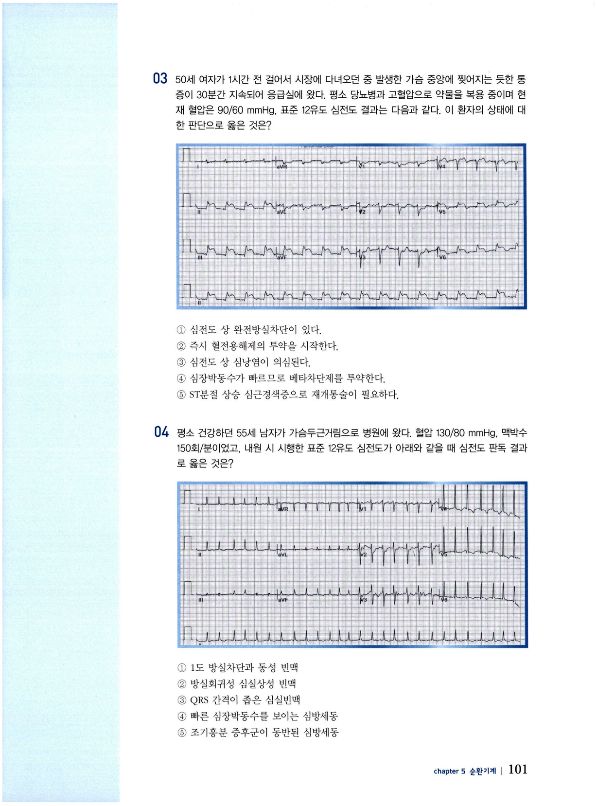
문 04 심전도 판독
평소 건강하던 55세 남자가 가슴두근거림으로 병원에 왔다. 혈압 130/80 mmHg, 맥박수 150회/분이었고 내원 시 시행한 표준 12유도 심전도가 아래와 같을 때 심전도 판독 결과로 옳은 것은?
- 1도 방실차단과 동성 빈맥
- 방실회귀성 심실상성 빈맥
- QRS 간격이 좁은 심실빈맥
- 빠른 심장박동수를 보이는 심방세동
- 조기흥분 증후군이 동반된 심방세동
문 05 경피 관상동맥중재술 vs 우회술
허혈성 심장질환에서 혈관재개통술로 경피 관상동맥중재술이나 관상동맥우회술을 시행하게 된다. 경피 관상동맥중재술에서 관상동맥우회술보다 더 적게 발생하는 합병증은?
- 뇌졸중(stroke)
- 재시술(revascularization)
- 허혈증상(ischemic symptom)
- 심장 관련 사망(cardiac death)
- 심근경색증(myocardial infarction)
문 06 스텐트 내 재협착·STEMI
1개월 전 전벽부 급성 심근경색증으로 좌전하행지 근위부(proximal left anterior descending artery)에 스텐트 삽입술을 시행한 환자는 퇴원 이후 약을 복용하지 않았고 외래도 방문하지 않았다. 내원 당일 30분 전부터 갑작스러운 흉통 및 의식소실이 있어 내원하였고 심전도 상 V1~V4 유도에서 ST분절의 상승이 보이며, 혈압은 90/60 mmHg이었다. 이 환자의 상태에 대한 설명으로 옳은 것은?
- 스텐트 내 재협착이 의심된다
- 응급 심폐소생술이 필요한 상황이다
- 응급으로 관상동맥조영술을 시행해야 한다
- Fondaparinux는 factor II inhibitor로서 헤파린과 같이 사용하면 안 된다
- 1개월 전 일반 금속 스텐트를 삽입한 경우에는 아스피린 단독으로 치료할 수 있다
문 07 관상동맥 CT혈관조영술 적응
다음 중 관상동맥 CT혈관조영술(coronary CT angiography)이 적용 가능한 경우는?
- 관상동맥 이외의 심장수술에서 수술하기 전 무증상이다
- 관상동맥질환의 위험도가 저위험도인 환자
- 2.0 mm 크기의 관상동맥 내 스텐트의 개통여부를 보기 위한 경우
- 이전 운동부하 심전도검사 결과 duke treadmill score가 고도 위험군일 경우
- 허혈성 흉통이 의심되는 비급성 흉통 환자에서 심전도 결과가 해석 가능하고 운동이 가능한 환자 중 검사 전 예측도가 고위험군인 경우
문 08 대동맥 CT 판독
고혈압으로 치료받던 75세 남자가 건강검진을 위해 시행한 CT검사 결과가 다음과 같을 때 의심되는 상태는?
- 대동맥류
- 대동맥박리
- 장골동맥류
- 대동맥협착
- 신장동맥협착
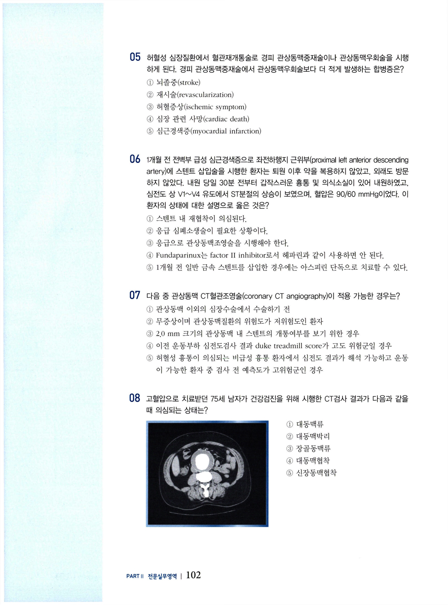
문 09 심부정맥혈전증 건강력
32세 여자가 5일간 지속되는 다리의 부종과 통증을 주호소로 외래에 방문하였다. 신체검진에서는 왼쪽 다리의 발열감과 불편감, 발적이 관찰되었다. 이 환자에게 추가적인 건강력을 조사하기 위한 내용으로 옳지 않은 것은?
- 심방세동의 과거력
- 최근 비행기 탑승 여부
- 최근의 수술이나 손상 여부
- 장기간 서 있는 직업의 여부
- 피임약을 포함한 약물의 복용상태
문 10 폐동맥 색전증 CT
3일 전에 대퇴골 골절로 정형외과 병동에 입원 중인 75세 여자가 갑작스런 흉통과 호흡곤란을 호소한다. 심전도와 흉부 방사선검사에서 특별한 이상은 보이지 않았고 혈청 proBNP는 100 pmol/L이다. 흉부 CT 결과가 아래와 같을 때 의심되는 상태는?
- 긴장 기흉
- 변이 협심증
- 폐동맥 색전증
- 흉부 대동맥박리
- 스트레스 유발성 심근병증
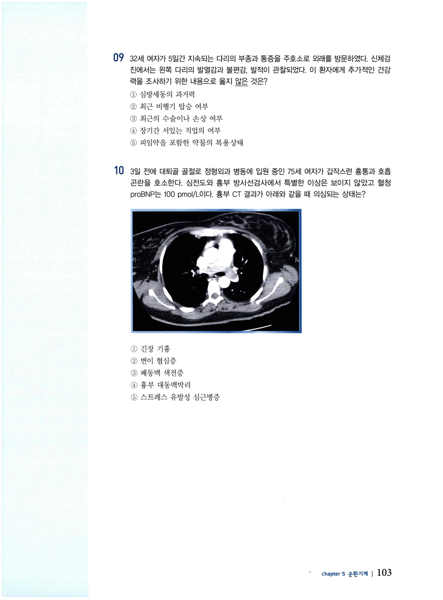
문 11 심전도 판독·중재
35세 여자가 3개월 전부터 발생한 가슴두근거림으로 방문하였고 심전도가 다음과 같을 때 적절한 중재는?
- 증상이 있으므로 전기적 제세동을 시행한다
- 체중감소를 확인하고 갑상선기능검사를 시행한다
- 임상적으로 의미가 없는 소견이므로 외래 추적관찰 한다
- 발작 심실상성 빈맥이므로 아데노신의 정주가 필요하다
- 심장의 불규칙한 박동이 있으므로 뇌혈관질환을 예방하기 위해 항응고제를 투약한다
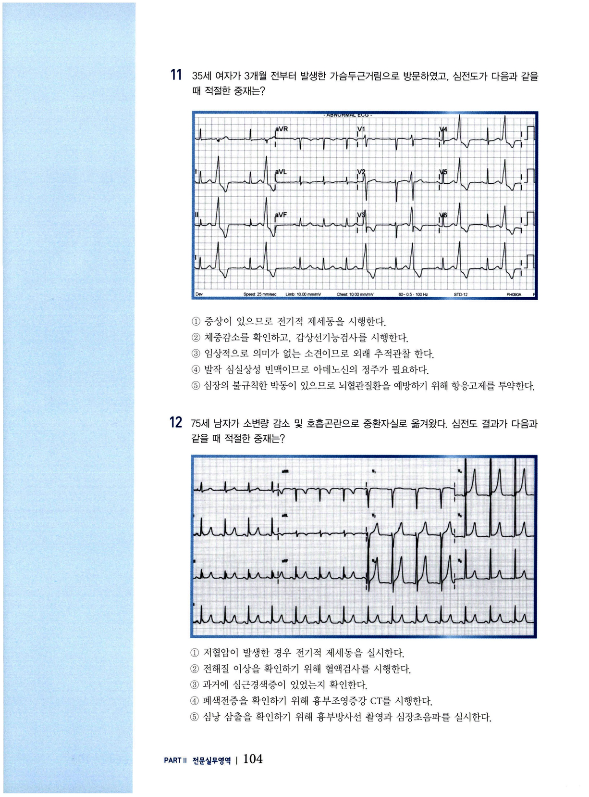
문 12 심전도 판독·중재
75세 남자가 소변량 감소 및 호흡곤란으로 중환자실로 옮겨왔다. 심전도 결과가 다음과 같을 때 적절한 중재는?
- 저혈압이 발생한 경우 전기적 제세동을 실시한다
- 전해질 이상을 확인하기 위해 혈액검사를 시행한다
- 과거에 심근경색증이 있었는지 확인한다
- 폐색전증을 확인하기 위해 흉부조영증강 CT를 시행한다
- 심낭 삼출을 확인하기 위해 흉부방사선 촬영과 심장초음파를 실시한다
문 13 심전도 변화·중재
55세 남자가 폐렴으로 호흡기내과 입원 중 심전도가 다음과 같이 변하여 중환자실로 옮겨왔다. 이 환자에게 적절한 중재는?
- 복부의 급성 통증 여부를 확인한다
- Amiodarone과 같은 항부정맥제의 사용 여부를 확인한다
- 혈액검사를 시행하여 고칼륨혈증, 고칼슘혈증을 확인한다
- 폐렴 치료를 위해서 사용하였던 기관지확장제를 확인한다
- 폐동맥 색전증이 의심되므로 d-dimer검사를 시행한다
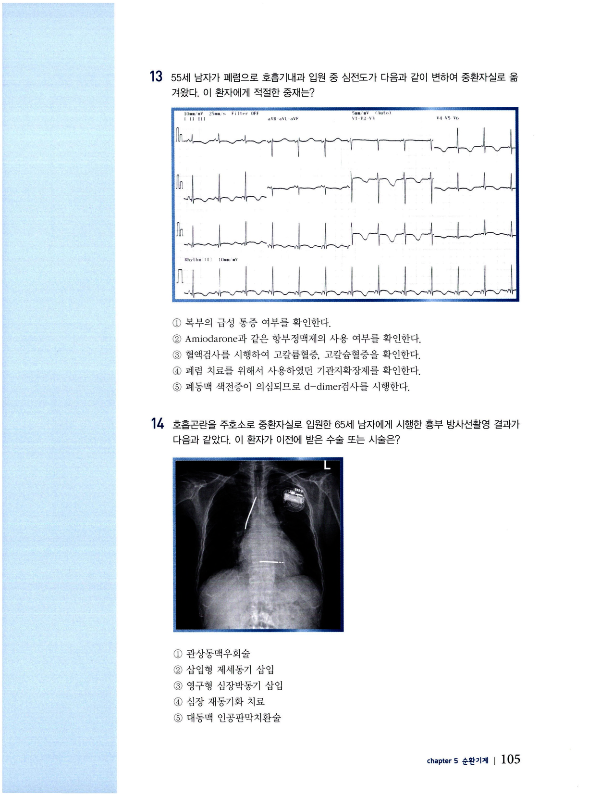
문 14 흉부 방사선 판독
호흡곤란을 주호소로 중환자실로 입원한 65세 남자에게 시행한 흉부 방사선촬영 결과가 다음과 같았다. 이 환자가 이전에 받은 수술 또는 시술은?
- 관상동맥우회술
- 삽입형 제세동기 삽입
- 영구형 심장박동기 삽입
- 심장 재동기화 치료
- 대동맥 인공판막치환술
문 15 STEMI 심전도 변화 순서
다음 ST분절 상승 급성 심근경색증 환자의 심전도 변화를 시간 순서대로 옳게 나열한 것은?
- 가 - 나 - 다 - 라
- 나 - 다 - 가 - 라
- 다 - 나 - 가 - 라
- 라 - 다 - 나 - 가
- 다 - 라 - 나 - 가
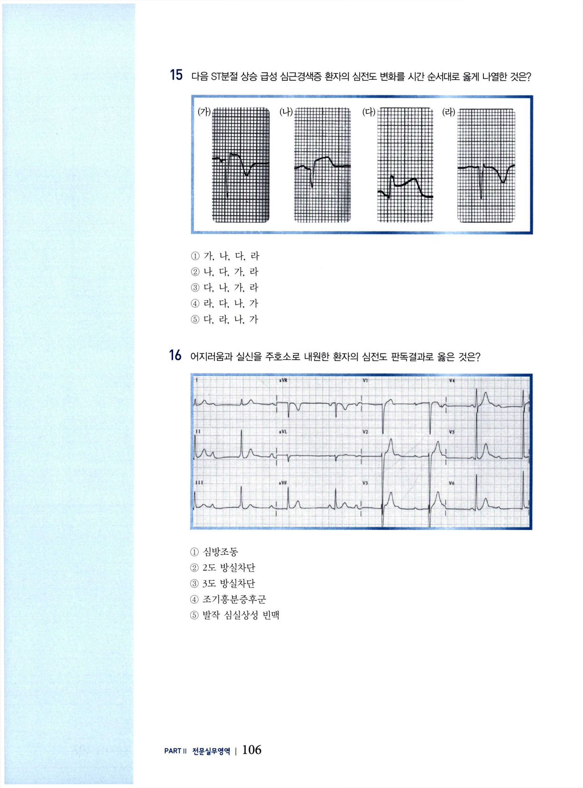
문 16 실신 심전도 판독
어지러움과 실신을 주호소로 내원한 환자의 심전도 판독결과로 옳은 것은?
- 심방조동
- 2도 방실차단
- 3도 방실차단
- 조기흥분증후군
- 발작 심실상성 빈맥
문 17 관상동맥조영술 전 혈액검사
급성 관동맥증후군으로 내원한 환자가 1시간 이내에 관상동맥조영술을 시행하려고 대기 중이다. 다음 환자의 혈액검사 결과 중 반드시 주의해야 할 것은?
- PT INR 1.2
- Troponin 0.2 ng/mL
- Serum Sodium 140 mEq/L
- Serum Potassium 4.9 mEq/L
- Serum Creatinine 2.5 mg/dL
문 18 관상동맥중재술 결과 판독
관상동맥조영술 후 중환자실로 입실한 환자의 시술 결과 판독이 다음과 같다. 이 환자의 상태에 대한 설명으로 옳은 것은?
[Report Of coronary angiography and intervention]
vascular access: right femoral vein
target lesion: mid LAD and mid RCA
mid LAD 80% tubular luminal narrowing: dilated with a 2.5 mm sized balloon and 3.0 mm sized drug eluting stent was deployed
mid RCA 90% diffuse luminal narrowing: dilated with a 3.0 mm sized balloon and 3.5 mm sized drug eluting stent was deployed
final diagnosis: unstable angina
- 치료한 병변은 좌회선지이다
- 최종 진단명은 불안정 협심증이다
- 단일 항혈소판제 요법을 12개월 시행한다
- 이중 항혈소판제 치료를 할 경우 3개월이 추천된다
- 오른쪽 요골동맥을 통해서 관상동맥중재술을 시행하였다
문 19 BNP 검사
심부전 환자에게 B-type natriuretic peptide를 검사하려고 한다. 이 검사에 대한 설명으로 옳은 것은?
- 신장기능의 영향을 받지 않는다
- 심부전의 확진에 사용하는 검사이다
- 심실의 용적 혹은 벽 스트레스가 상승된 것을 반영하는 수치이다
- 수축기 심부전에서는 증가하지만 이완기 심부전에서는 증가하지 않는다
- 민감도가 낮아서 호흡곤란 환자에서 심부전 진단을 배제하는 데 사용하기 어렵다
문 20 심부전 병태생리
심부전의 병태생리에 대한 설명으로 옳은 것은?
- 심부전의 발생에 D-dimer가 일정 작용을 한다
- 심장의 수축기능 장애가 이완기능 장애보다 2배 더 흔하다
- 심부전 환자에서 레닌-안지오텐신 시스템의 항진은 심장 근육의 섬유화와 관련이 있다
- 심부전 환자에게 혈중 도파민 수치는 상당히 증가되어 있어 교감신경계가 관여함을 의미한다
- 심부전의 경우 magnesium channel과 phosphate pump와 관련된 유전자의 결함이 있어 심근수축과 이완기능에 장애가 생긴다
문 21 박출률 보존 심부전(HFpEF)
74세 여자가 3일 전부터 호흡곤란과 부종이 심해져 내원하였다. 10년 전부터 고혈압으로 경구 투약 중이고 신체검진 상 S3 심음이 청진되었고 심초음파에서 좌심실 박출률은 60%, 흉부 방사선검사는 다음과 같다. 환자의 질환과 관련된 설명으로 옳은 것은?
- 전체 심부전의 50% 정도로 비교적 흔하다
- 폐울혈은 관계가 없으므로 이뇨제는 효과가 없다
- 재입원율은 좌심실 박출률이 감소된 심부전보다 흔하다
- 고령, 고혈압에서 흔하며, 남자가 여자보다 더 흔하다
- 안지오텐신전환효소억제제, 안지오텐신수용체차단제, 베타차단제는 생존율을 향상시킨다
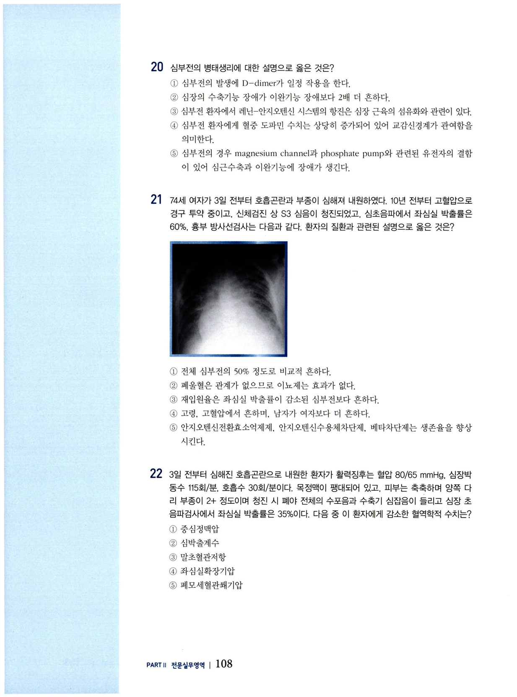
문 22 심부전 혈역학
3일 전부터 심해진 호흡곤란으로 내원한 환자가 활력징후는 혈압 80/65 mmHg, 심장박동수 115회/분, 호흡수 30회/분이다. 목정맥이 팽대되어 있고 피부는 축축하며 양쪽 다리 부종이 2+ 정도이며 청진 시 폐야 전체의 수포음과 수축기 심잡음이 들리고 심장 초음파검사에서 좌심실 박출률은 35%이다. 다음 중 이 환자에게 감소한 혈역학적 수치는?
- 중심정맥압
- 심박출계수
- 말초혈관저항
- 좌심실확장기압
- 폐모세혈관쐐기압
문 23 모니터 판독·중재
4일 전부터 심해진 호흡곤란으로 내원한 환자가 혈압 80/65 mmHg, 심장박동수 115회/분, 호흡수 30회/분이다. 집중관찰실로 옮겨진 상태로 환자의 모니터는 다음과 같다. 모니터를 통해 다음과 같은 상태가 관찰될 때 환자에게 적용된 중재는?
- 혈액투석
- 하대정맥 필터
- 대동맥 풍선펌프
- 관상동맥중재술
- 일시형 심장박동기
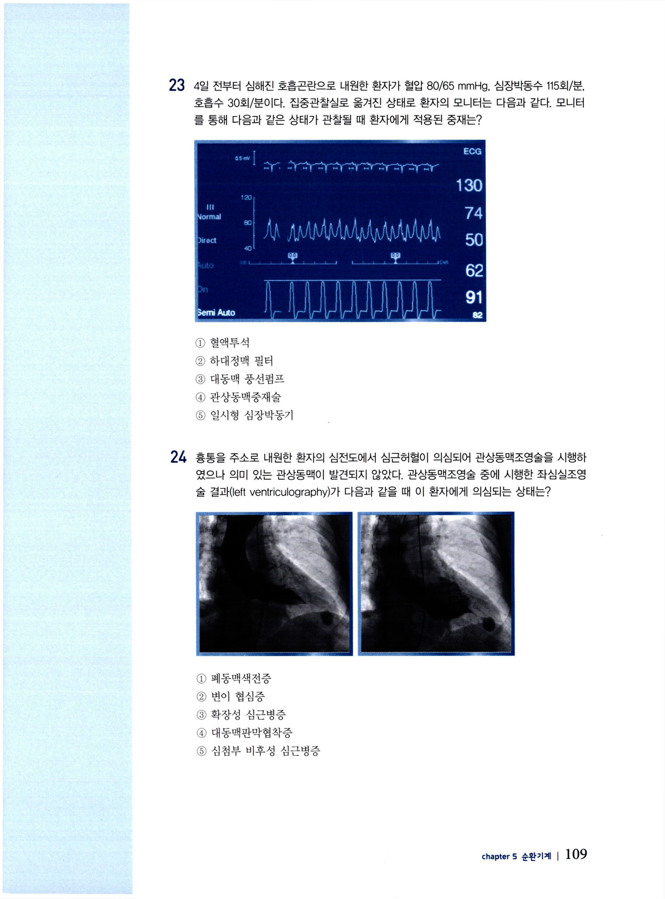
문 24 좌심실조영술 판독
흉통을 주소로 내원한 환자의 심전도에서 심근허혈이 의심되어 관상동맥조영술을 시행하였으나 의미 있는 관상동맥이 발견되지 않았다. 관상동맥조영술 중에 시행한 좌심실조영술 결과(left ventriculography)가 다음과 같을 때 이 환자에게 의심되는 상태는?
- 폐동맥색전증
- 변이 협심증
- 확장성 심근병증
- 대동맥판막협착증
- 심첨부 비후성 심근병증
문 25 심근허혈 병태생리 순서
심근허혈 상태에서 시간경과에 따른 심장의 병태생리적 변화 순서로 옳은 것은?
- 이완기능장애 → 수축기능장애 → 심전도 변화 → 흉통
- 수축기능장애 → 심전도 변화 → 흉통 → 이완기능장애
- 심전도 변화 → 이완기능장애 → 수축기능장애 → 흉통
- 흉통 → 이완기능장애 → 수축기능장애 → 심전도 변화
- 심전도 변화 → 흉통 → 이완기능장애 → 수축기능장애
문 26 운동부하검사
계단을 오를 때 흉통이 발생하는 환자에게 처방된 운동부하검사(Treadmill test)에 대한 설명으로 옳은 것은?
- 심방세동이 있는 경우에도 양성 예측률에는 변화가 없다
- 운동 중 산소소모량을 측정하여 최대운동량을 측정한다
- 운동이 가능해도 dobutamine stress echocardiography 또는 관상동맥 CT를 시행할 수 있다
- 운동부하검사 시 운동중 수축기 혈압이 10 mmHg 이상 증가한다면 불량한 예후를 시사한다
- 심전도 상 완전좌각차단의 소견이 보이면 운동부하 심전도검사보다 약물 유발 핵의학검사가 선호된다
문 27 허혈성 심질환 심초음파
허혈성 심질환에서 심초음파의 유용성에 대한 설명으로 옳은 것은?
- 협착 또는 폐색된 관상동맥부위를 예측하는 데는 유용하지 않다
- 도부타민 심초음파는 심근의 생존여부 판단에 유용하다
- 경식도 심초음파를 시행하면 심근의 벽운동장애를 자세히 볼 수 있다
- 심초음파가 정상이면 관상동맥질환의 가능성을 배제할 수 있다
- 국소벽 운동 이상으로 과거 발생한 심근경색증과 급성 심근경색증을 감별할 수 있다
문 28 관상동맥조영술 병변 위치
1시간 전부터 발생한 흉통으로 응급 관상동맥조영술을 시행한 환자의 검사 결과가 다음과 같을 때 병변이 있는 관상동맥은? (A, B)
- 좌주간부
- 좌전하행지
- 좌회선동맥
- 우관상동맥
- 심실중격분지
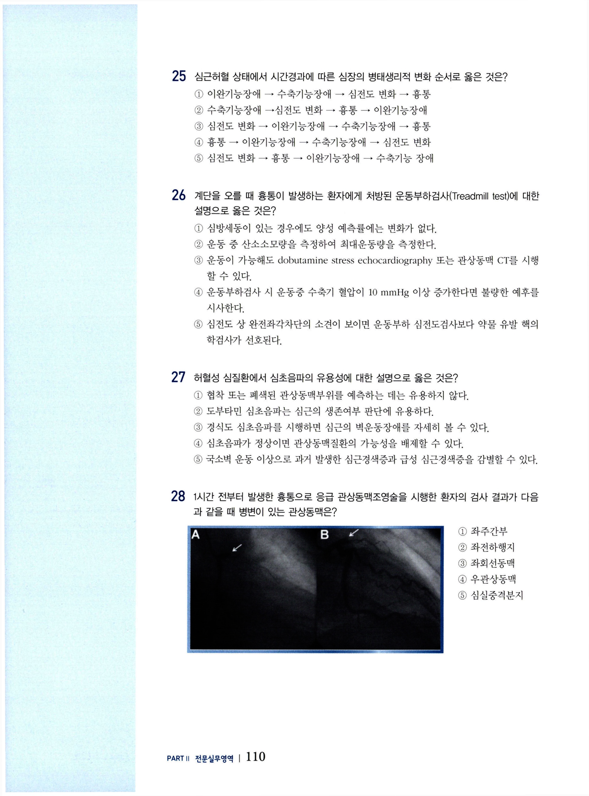
문 29 재관류 지표
흉통과 호흡곤란으로 응급실에 온 환자의 심전도에서 V2-V4에서 ST분절 상승과 T파 역위가 관찰되어 혈전용해요법이 시작되었다. 다음 중 재관류 되었음을 의미하는 지표는?
- CK의 감소, 통증의 감소
- 짧은 심실빈맥, 통증의 감소
- 통증의 감소, proBNP 수치의 감소
- Troponin의 감소, proBNP 수치의 감소
- 심전도에서 ST분절 하강의 발생, 짧은 심실빈맥
문 30 CT 관상동맥조영술
다음과 같은 CT 관상동맥조영술에 대한 설명으로 옳은 것은?
- Slice thickness는 보통 3mm로 설정하여 검사한다
- 16 채널검사로 관상동맥의 협착을 평가할 수 있다
- 관상동맥의 석회화가 있는 경우에도 쉽게 병변의 심한 정도를 평가할 수 있다
- 관상동맥우회술 시행 후 흉통이 있는 환자에게 이식혈관을 평가하기 위해 시행할 수 있다
- 좌전하행지에서 다른 관상동맥보다 심한 운동성으로 인해서 검사가 적절하지 않은 경우가 흔하다
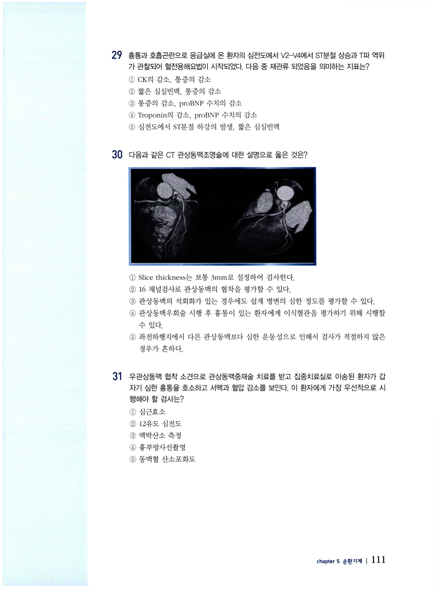
문 31 관상동맥중재술 후 흉통
우관상동맥 협착 소견으로 관상동맥중재술 치료를 받고 집중치료실로 이송된 환자가 갑자기 심한 흉통을 호소하고 서맥과 혈압 감소를 보인다. 이 환자에게 가장 우선적으로 시행해야 할 검사는?
- 심근효소
- 12유도 심전도
- 맥박산소 측정
- 흉부방사선촬영
- 동맥혈 산소포화도
문 32 불안정 협심증 흉통 특징
다음 중 불안정 협심증에서 나타나는 흉통의 특징은?
- 가슴 아픈 것이 물을 마시면 나아진다
- 가슴을 칼로 찌르는 듯한 통증이 30초 정도 지속된다
- 자세의 변화에 따라 가슴이 타는 듯한 증상이 변화한다
- 가만히 있어도 가슴이 아픈 통증이 20분 이상 지속된다
- 계단을 올라가면 5분 정도 가슴이 아프다가 쉬면 나아진다
문 33 안정 vs 불안정 협심증 감별
안정 협심증과 불안정 협심증의 감별에 가장 중요한 것은?
- 흉통 양상의 차이
- ST분절의 편향 정도
- 관상동맥조영술에서의 협착 정도
- 심장초음파에서의 국소 벽운동 장애
- 관상동맥 CT에서 석회화 정도의 차이
문 34 급성 흉통·호흡곤란 감별
대퇴관절의 무혈성괴사로 입원 중인 환자가 1시간 전부터 발생한 흉통과 호흡곤란을 호소하던 중 30분 전부터 갑자기 증상이 악화되면서 의식이 혼미해졌다. 혈압은 80/50 mmHg, 박동수는 125회/분이다. 이 환자에게 의심되는 상태가 아닌 것은?
- 긴장 기흉
- 대동맥박리
- 복부대동맥류
- 폐동맥 색전증
- 급성 심근경색증
문 35 조기 관상동맥조영술 적응
9개월 전 불안정 협심증 치료를 위해 스텐트삽입술을 받은 환자가 흉통이 있어 내원하였다. 내원 당시 혈압 80/50 mmHg, 심장박동수 70회/분, NT-proBNP는 1,500 pmol/L, 심근효소수치는 정상이다. 심전도 상 V4-6의 ST분절 하강이 있고 심장초음파에서 좌심실 박출률은 50%이며, 침상내 심전도 모니터에서 비지속성 심실빈맥이 보인다. 이 환자에게 조기에 관상동맥조영술을 시행해야 하는 이유는?
- NT-proBNP의 상승
- 수축기 혈압의 감소
- 비지속성 심실빈맥의 발생
- 9개월 전 스텐트 삽입
- 좌심실 박출률 50%
문 36 EVAR 후 합병증
3일 전에 복부대동맥류로 스텐트 시술(endovascular aneurysm repair; EVAR)을 받고 집중치료실에 입원 중인 환자가 오전부터 오른쪽 슬와동맥과 발등동맥이 촉진되지 않고 오른쪽 발이 차고 창백해졌다. 이 환자에게 가장 의심되는 상태는?
- 스텐트의 이동
- 스텐트에서 혈액누출(endoleak) 발생
- 가성동맥류의 발생
- 동정맥기형
- 혈전에 의한 스텐트 폐색
문 37 급성 대동맥박리 중재
2시간 전부터 시작된 극심한 흉통이 있어 내원한 환자가 혈압 220/120 mmHg, 심장박동수 120회/분이다. 환자는 2년 전부터 혈압이 높다고 들었으나 병원에 다니지 않았다고 한다. 흉골 하연에서 심잡음이 청진되고 흉부 방사선검사 상 종격동이 확장되어 있다. 이 환자에게 적절한 중재는?
- 폐동맥 색전증의 동반 여부를 확인해야 한다
- 혈심낭이 발생하면 즉시 심낭천자를 시행하고 최대한 배액시킨다
- 하행 대동맥만을 침범했다 하더라도 통증이 지속될 경우 수술을 고려할 수 있다
- 경흉부 초음파는 상행·하행 흉부 대동맥, 대동맥궁의 박리의 진단에 민감도와 특이도가 높다
- Nitroprusside나 labetalol을 사용하지 못할 경우 verapamil이나 carvedilol과 같은 칼슘통로차단제를 사용할 수 있다
문 38 심근경색후 심낭염(드레슬러)
급성 심근경색증으로 입원치료 중인 환자가 입원 10일째에 전흉부 통증을 호소한다. Nitroglycerin을 투여해도 통증이 흡기 시에 심해진다. 심전도검사에서 새롭게 발견된 변화는 없으며 심근효소 수치도 정상범위 내에 있다. 심장초음파에서 소량의 심낭삼출이 관찰되고 혈압은 정상이며, 청진 시 특별한 이상은 없다. 이 환자에게 의심되는 상태와 관련된 설명으로 옳은 것은?
- 주로 후벽부의 심근경색증에서 흔하다
- 증상이 심할 경우 스테로이드를 고용량으로 쓰면 호전이 빠르다
- 동맥경화증의 급성 악화를 막기 위해 저용량의 아스피린을 투약한다
- 흉막삼출이 동반될 수 있으며 ESR 상승과 백혈구 증가가 나타날 수 있다
- 심장초음파 시행하여 심근경색증의 합병증인 심실중격천공을 평가해야 한다
문 39 하벽 MI 후 부정맥
급성 심근경색증으로 우관상동맥 스텐트삽입술 치료를 받은 후 집중치료실에서 경과를 관찰 중인 환자의 심전도가 다음과 같이 변했을 때 판단으로 옳은 것은?
- 심근경색증 환자에게 가장 많이 발생하는 부정맥이다
- 혈역학적으로 불안정한 경우에는 아트로핀을 정주한다
- 전벽부 심근경색증에서 하벽부 심근경색증보다 흔하다
- 심실빈맥으로의 진행을 막기 위해 리도카인을 정주한다
- 스텐트 혈전증이 의심되므로 조영술을 다시 시행해야 한다
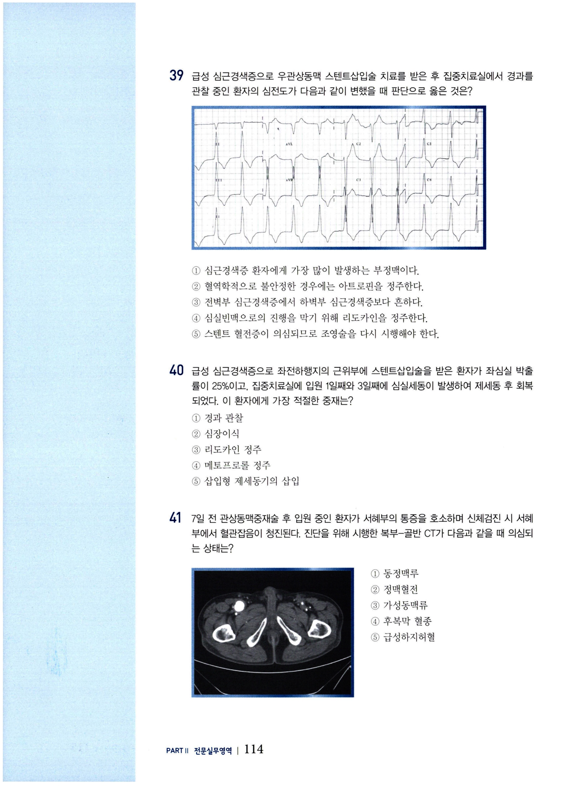
문 40 삽입형 제세동기 적응
급성 심근경색증으로 좌전하행지의 근위부에 스텐트삽입술을 받은 환자가 좌심실 박출률이 25%이고 집중치료실에 입원 1일째와 3일째에 심실세동이 발생하여 제세동 후 회복되었다. 이 환자에게 가장 적절한 중재는?
- 경과 관찰
- 심장이식
- 리도카인 정주
- 메토프롤롤 정주
- 삽입형 제세동기의 삽입
문 41 가성동맥류 CT
7일 전 관상동맥중재술 후 입원 중인 환자가 서혜부의 통증을 호소하여 신체검진 시 서혜부에서 혈관잡음이 청진된다. 진단을 위해 시행한 복부-골반 CT가 다음과 같을 때 의심되는 상태는?
- 동정맥루
- 정맥혈전
- 가성동맥류
- 후복막 혈종
- 급성하지허혈
문 42 스텐트삽입술 목적
간헐적인 흉통으로 외래에 방문한 환자가 관상동맥조영술에서 좌회선지 근위부의 90% 가량의 협착이 발견되어 스텐트를 삽입하였다. 이 환자에게 스텐트삽입술을 시행한 목적은?
- 증상의 완화
- 사망률의 감소
- 향후 심근경색증 발생의 예방
- 향후 발생 가능한 심부전의 예방
- 향후 발생 가능한 급성 심장사의 예방
문 43 관상동맥 스텐트
다음은 관상동맥중재술에 사용되는 스텐트에 대한 설명으로 옳은 것은?
- 약물방출스텐트에 사용되는 약물은 methotrexate이다
- 일반금속스텐트의 합병증은 혈전증과 재협착이다
- 약물방출스텐트는 악성종양의 발생 위험이 있다
- 일반금속스텐트는 단일 항혈소판요법, 약물방출스텐트는 이중 항혈소판 요법을 시행한다
- 약물방출스텐트는 일반 금속스텐트에 비해 재협착률이 감소되었다
문 44 안정 협심증 추가검사
5년 전부터 정기적으로 항고혈압제를 복용 중인 환자가 1년 전부터 등산할 때 발생하는 흉통으로 외래에 방문했다. 외래에서 시행한 심전도와 흉부 방사선검사에서 특별한 이상이 발견되지 않았을 때 시행해야 할 추가검사는?
- 심장 MRI
- 심근관류스캔
- 홀터심전도검사
- 관상동맥조영술
- 운동부하 심전도검사
문 45–47 하벽부 급성 심근경색증(공유 지문)
1시간 전부터 지속되는 흉통으로 내원한 환자가 흉통이 가슴 중앙에서 목과 왼팔로 퍼진다고 한다. 내원 시 혈압은 75/55 mmHg, 심장박동수는 135회/분, 호흡수는 30회/분, 체온은 36.2℃이다. 흉부 방사선검사에서 이상소견은 없었고 심전도는 다음과 같다.
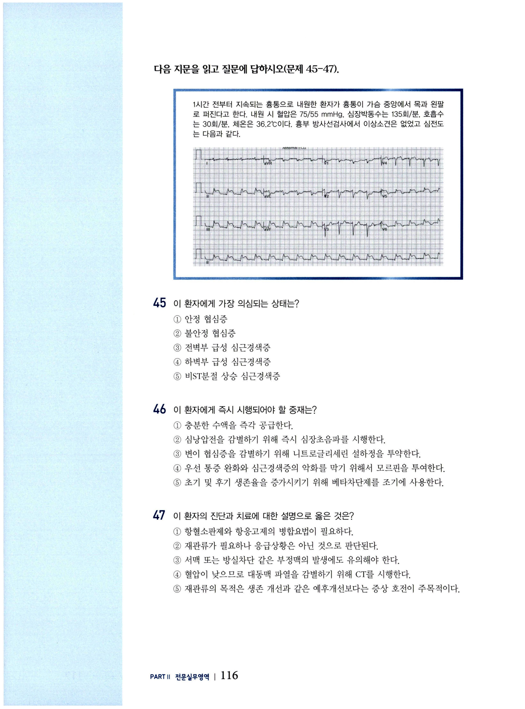
이 환자에게 가장 의심되는 상태는?
- 안정 협심증
- 불안정 협심증
- 전벽부 급성 심근경색증
- 하벽부 급성 심근경색증
- 비ST분절 상승 심근경색증
이 환자에게 즉시 시행되어야 할 중재는?
- 충분한 수액을 즉각 공급한다
- 심낭압전을 감별하기 위해 즉시 심장초음파를 시행한다
- 변이 협심증을 감별하기 위해 니트로글리세린 설하정을 투약한다
- 우선 통증 완화와 심근경색증의 악화를 막기 위해서 모르핀을 투여한다
- 초기 및 후기 생존율을 증가시키기 위해 베타차단제를 조기에 사용한다
이 환자의 진단과 치료에 대한 설명으로 옳은 것은?
- 항혈소판제와 항응고제의 병합요법이 필요하다
- 재관류가 필요하나 응급상황은 아닌 것으로 판단된다
- 서맥 또는 방실차단 같은 부정맥의 발생에도 유의해야 한다
- 혈압이 낮으므로 대동맥 파열을 감별하기 위해 CT를 시행한다
- 재관류의 목적은 생존 개선과 같은 예후개선보다는 증상 호전이 주목적이다
문 48–49 변이 협심증(공유 지문)
4개월 전부터 새벽에 일어날 때 5분간 지속되는 가슴통증과 어지럼증, 식은땀을 동반하는 증상이 있는 환자가 외래에 방문하였다. 술을 마신 다음날 깰 때 증상은 더 심하고 니트로글리세린 설하정을 투여하면 증상이 없어진다고 한다. 과거력이나 가족력은 없고 담배는 원래 피지 않는다고 한다. 외래에서 시행한 심전도, 흉부 방사선검사 및 혈액검사에서도 이상은 발견되지 않았다.
이 환자에게 가장 의심되는 상태와 그에 따른 가장 적절한 검사는?
- 기흉 - 흉부 CT
- 폐동맥색전증 - 조영증강 흉부 CT
- 급성 심근경색증 - 관상동맥조영술
- 대동맥박리 - 조영증강 대동맥 CT
- 변이 협심증 - 에르고노빈 유발검사
이 환자의 치료에 대한 설명으로 옳은 것은?
- 흡연보다는 금주가 우선시된다
- 혈관확장을 위해 아세틸콜린을 투약한다
- 칼슘통로차단제보다는 베타차단제가 선호된다
- 조영술에서 협착 소견이 있다면 재관류를 고려할 수 있다
- 최대한의 약물치료에도 지속되는 심실빈맥이 있을 경우 심장박동기를 고려한다
문 50 심근관류스캔 판독
심근관류스캔 영상이 다음과 같을 때 협착이나 폐색이 의심되는 관상동맥은? (arrows = ischemia)
- 좌주간부
- 좌회선지
- 좌전하행지
- 좌흉골동맥
- 우흉골동맥
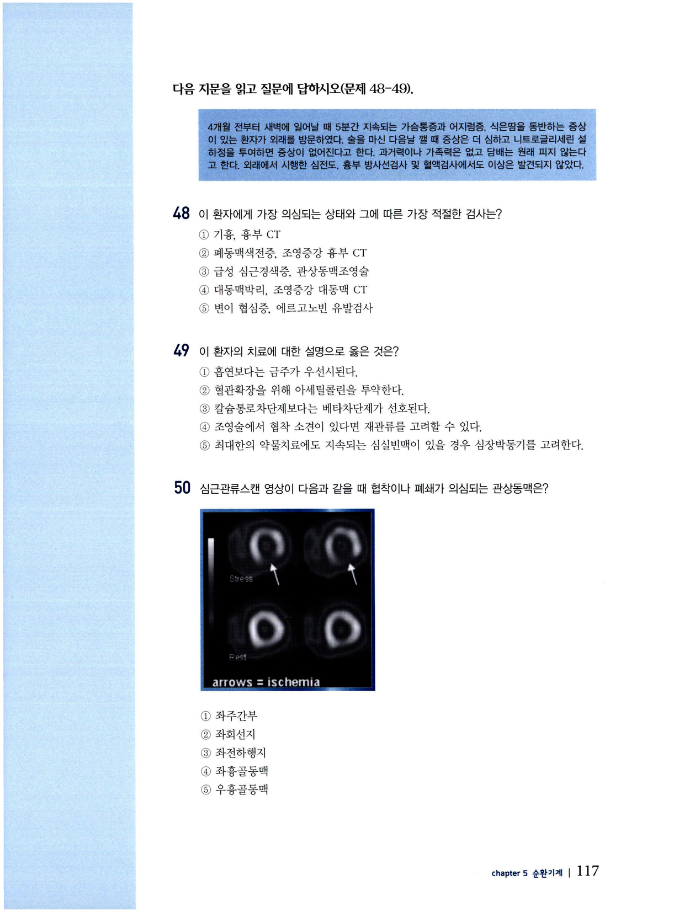
문 51 CT/관상동맥조영술 판독
다음의 관상동맥 CT 혈관조영술과 관상동맥조영술 결과에서 협착이나 폐색이 의심되는 화살표로 표시된 관상동맥은?
- 좌주간부
- 중격분지
- 좌회선지
- 우관상동맥
- 좌전하행지
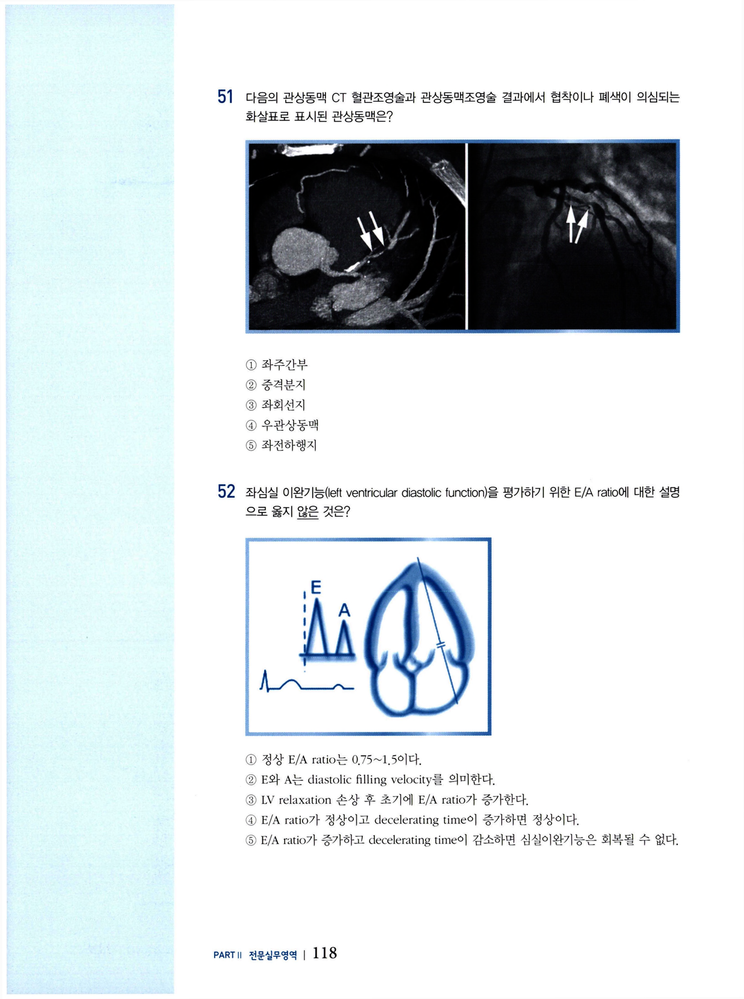
문 52 E/A ratio
좌심실 이완기능(left ventricular diastolic function)을 평가하기 위한 E/A ratio에 대한 설명으로 옳지 않은 것은?
- 정상 E/A ratio는 0.75~1.5이다
- E와 A는 diastolic filling velocity를 의미한다
- LV relaxation 손상 후 초기에 E/A ratio가 증가한다
- E/A ratio가 정상이고 decelerating time이 증가하면 정상이다
- E/A ratio가 증가하고 decelerating time이 감소하면 심실이완기능은 회복될 수 없다
문 53 심근 생존능 평가
심근경색 부위 심근의 생존능(viability)을 평가하기 위해 가장 적절한 검사는?
- 2-D echocardiography with Doppler
- Stress echocardiography (low dose dobutamine)
- Coronary angiography
- coronary CT angiography
- PET
문 54 경흉부 초음파 영상
다음 경흉부 초음파검사 영상에 대한 설명으로 옳은 것은?
- 검사 중 transducer는 apex에 있다
- papillary muscle을 관찰할 수 있다
- "가"는 anterior wall을 의미한다
- 검사 중 transducer는 sternum 위에 있다
- apical 2 chamber view이다
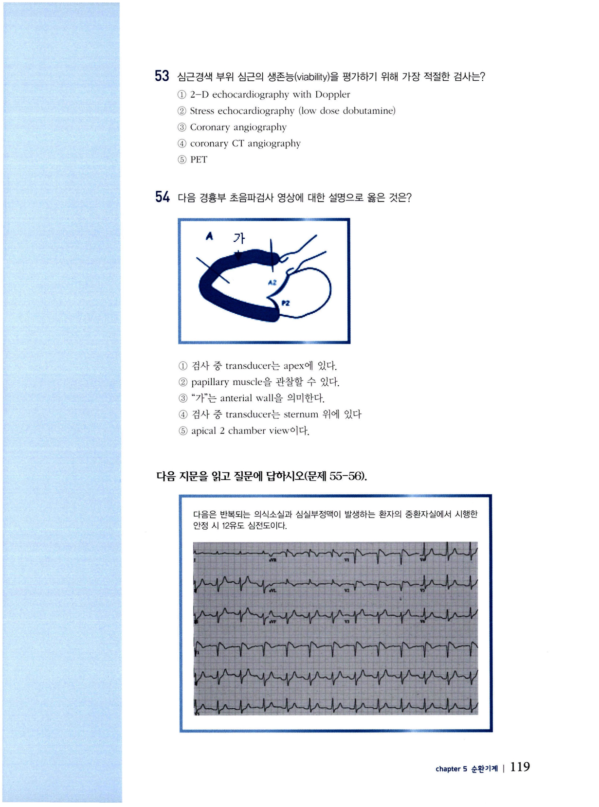
문 55–56 브루가다 증후군(공유 지문)
다음은 반복되는 의식소실과 심실부정맥이 발생하는 환자의 중환자실에서 시행한 안정 시 12유도 심전도이다.
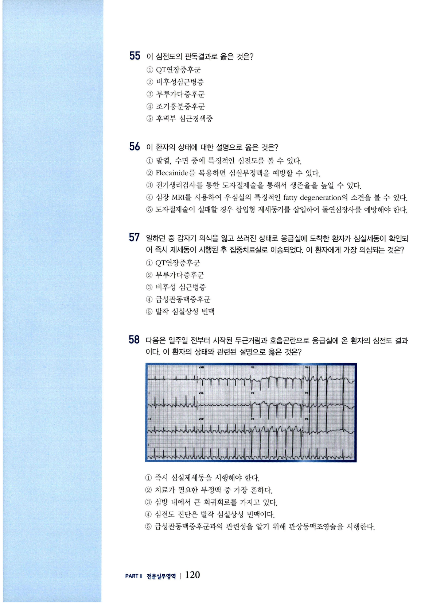
이 심전도의 판독결과로 옳은 것은?
- QT연장증후군
- 비후성심근병증
- 부루가다증후군
- 조기흥분증후군
- 후벽부 심근경색증
이 환자의 상태에 대한 설명으로 옳은 것은?
- 발열, 수면 중에 특징적인 심전도를 볼 수 있다
- Flecainide를 복용하면 심실부정맥을 예방할 수 있다
- 전기생리검사를 통한 도자절제술을 통해서 생존율을 높일 수 있다
- 심장 MRI를 사용하여 우심실의 특징적인 fatty degeneration의 소견을 볼 수 있다
- 도자절제술이 실패할 경우 삽입형 제세동기를 삽입하여 돌연심장사를 예방해야 한다
문 57 심실세동 원인 감별
일하던 중 갑자기 의식을 잃고 쓰러진 상태로 응급실에 도착한 환자가 심실세동이 확인되어 즉시 제세동이 시행된 후 집중치료실로 이송되었다. 이 환자에게 가장 의심되는 것은?
- QT연장증후군
- 부루가다증후군
- 비후성 심근병증
- 급성관동맥증후군
- 발작 심실상성 빈맥
문 58 심방조동 심전도
다음은 일주일 전부터 시작된 두근거림과 호흡곤란으로 응급실에 온 환자의 심전도 결과이다. 이 환자의 상태와 관련된 설명으로 옳은 것은?
- 즉시 심실제세동을 시행해야 한다
- 치료가 필요한 부정맥 중 가장 흔하다
- 심방 내에서 큰 회귀회로를 가지고 있다
- 심전도 진단은 발작 심실상성 빈맥이다
- 급성관동맥증후군과의 관련성을 알기 위해 관상동맥조영술을 시행한다
문 59 대동맥판막 폐쇄부전
급성 폐부종으로 집중치료실로 입실한 환자가 혈압 90/60 mmHg, 호흡수 30회/분이다. 수축기 심잡음이 청진되고 경동맥 박동은 bouncing 양상이다. 흉부 방사선검사에서 심비대와 폐울혈이 관찰되고 심전도 상 동성서맥, 좌심실비대, 완전좌각차단을 보인다. 이 환자에게 가장 의심되는 상태는?
- 대동맥판막 협착
- 승모판막 폐쇄부전
- 대동맥판막 폐쇄부전
- 심낭삼출로 인한 심장압전
- 폐동맥 고혈압이 동반된 삼첨판막 폐쇄부전
문 60 저혈량 쇼크 중재
대퇴전치환술을 시행 받은 환자가 혈압 80/68 mmHg, 심장박동수 126회/분, PCWP 5 mmHg일 때 가장 적절한 중재는?
- 수혈
- 아트로핀 정주
- 바소프레신 정주
- 생리식염수 250 mL 정주(bolus)
- 도파민 10 microg/Kg/min으로 투여
문 61 ACS 중 상복부 통증
급성관동맥증후군으로 입원 중인 환자가 비강캐뉼라를 통해 산소 2 L/분이 공급되고 unfractionated heparin이 지속 정맥주입 중이다. 심전도는 II, III, aVF에서 T파의 역위만 관찰되어 응급실에 도착했을 때와 변화는 없다. 10분 전부터 상복부의 통증을 호소하고 점점 심해진다고 할 때 가장 적절한 중재는?
- 복부 CT
- 비위관 삽입
- 혈청 troponin검사
- 12유도 심전도검사
- 복부 방사선검사
문 62 박동조율기 심전도
3년 전 영구 박동조율기를 삽입한 환자의 심전도 결과가 다음과 같을 때 박동조율기의 형태와 심전도에 대한 설명으로 옳은 것은?
- complete capture, VVI pacemaker
- complete capture, AAI pacemaker
- complete capture, DDD pacemaker
- incomplete capture, VVI pacemaker
- incomplete capture, DDD pacemaker
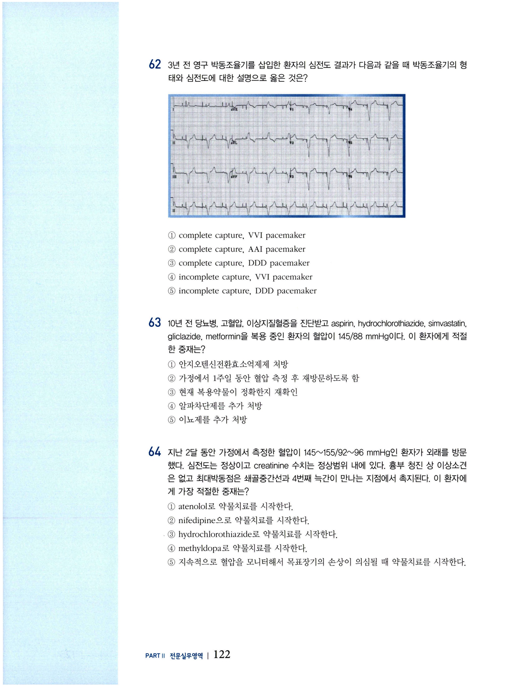
문 63 고혈압 약물 조정
10년 전 당뇨병, 고혈압, 이상지질혈증을 진단받고 aspirin, hydrochlorothiazide, simvastatin, gliclazide, metformin을 복용 중인 환자의 혈압이 145/88 mmHg이다. 이 환자에게 적절한 중재는?
- 안지오텐신전환효소억제제 처방
- 가정에서 1주일 동안 혈압 측정 후 재방문하도록 함
- 현재 복용약물이 정확한지 재확인
- 알파차단제를 추가 처방
- 이뇨제를 추가 처방
문 64 고혈압 초기 약물
지난 2달 동안 가정에서 측정한 혈압이 145~155/92~96 mmHg인 환자가 외래에 방문했다. 심전도는 정상이고 creatinine 수치는 정상범위 내에 있다. 흉부 청진 상 이상소견은 없고 최대박동점은 쇄골중간선과 4번째 늑간이 만나는 지점에서 측정된다. 이 환자에게 가장 적절한 중재는?
- atenolol로 약물치료를 시작한다
- nifedipine으로 약물치료를 시작한다
- hydrochlorothiazide로 약물치료를 시작한다
- methyldopa로 약물치료를 시작한다
- 지속적으로 혈압을 모니터해서 목표장기의 손상이 의심될 때 약물치료를 시작한다
문 65 신동맥협착 주의 약물
신동맥협착이 의심되는 환자에게 투여 시 주의가 필요한 항고혈압제는?
- 안지오텐신전환효소억제제
- 이뇨제
- 칼슘통로차단제
- 베타차단제
- 알파차단제
문 66 당뇨·미세알부민뇨 고혈압
당뇨병으로 10년째 경구 혈당강하제를 복용 중인 환자가 최근 2단계 고혈압 진단을 받았다. 혈청 creatinine 1.6 mg/dL, 일반 소변검사에서 미세알부민뇨가 나타났다. 이 환자에게 우선적으로 처방해야 할 항고혈압제는?
- 안지오텐신전환효소억제제
- 이뇨제
- 칼슘통로차단제
- 베타차단제
- 알파차단제
문 67 Mobitz 방실차단·중단 약물
한 달 전 편두통으로 약물 복용 중인 환자가 2단계 고혈압을 진단받았다. 외래에서 시행한 심전도에서 Mobitz 방실차단이 발견되었을 때 편두통 약물 중 중단해야 하는 것은?
- Angiotensin receptor blockers
- Beta-blockers
- Alpha-blockers
- Calcium channel blockers
- Angiotensin-converting enzyme inhibitor
문 68 CCB 부작용
다음 항고혈압제 중 두통, 홍조, 빈맥, 말초부종의 부작용이 있는 약물은?
- Beta blockers
- Calcium channel blockers
- ACE inhibitors
- Diuretics
- Angiotensin receptor blocker
문 69 알파차단제 적응
다음 중 항고혈압제로 처방된 알파차단제의 영향을 받는 상태는?
- 울혈성 심부전
- 양성 전립선비대증
- 잦은 편두통
- 협심증
- 요실금
문 70 ACEI 부작용·대체 약물
고혈압 치료를 위해 처방된 captopril을 복용 중 마른 기침이 심하고 식욕부진과 발진이 있을 때 대체 가능한 약물은?
- 이뇨제
- 베타차단제
- 알파차단제
- 안지오텐신수용체차단제
- 칼슘통로차단제
문 71 고혈압 위기 약물(녹내장)
고혈압과 협심증으로 약물 복용 중인 환자가 녹내장 수술 후 병실에서 관찰 중 흉통을 호소하여 혈압 220/110 mmHg, 맥박수 100회/분, 호흡수 22회/분이다. 이 환자의 혈압을 낮추기 위해 가장 우선적으로 투여할 약물은?
- Sodium nitroprusside (Nipride)
- Diazoxide (Proglycem)
- Labetolol (Normodyne, Trandate)
- Nicardipine (Cardene)
- Nitrate (Nitroglycerin)
문 72 규칙적 빈맥 약물
두근거림과 호흡곤란을 호소하는 환자가 활력징후는 혈압 110/70 mmHg, 심장박동수 150회/분(규칙적), 호흡수 22회/분이다. 다음과 같은 심전도가 모니터에서 관찰될 때 일차적으로 사용해야 할 약물은?
- atropine, isoproterenol
- diltiazem, adenosine
- digitalis, pronestyl
- carvedilol, metoprolol
- amiodarone, lidocain
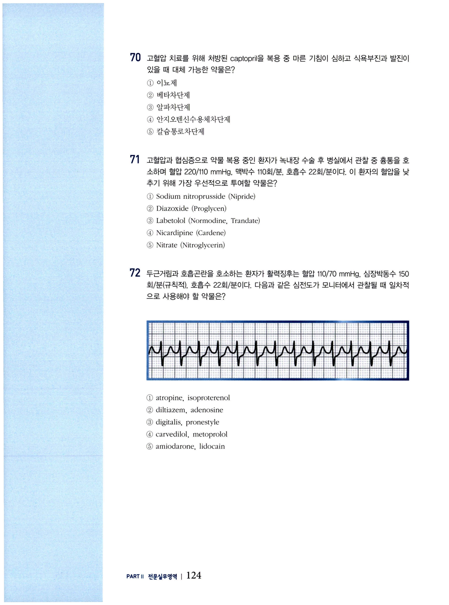
문 73 두근거림 심전도·중재
침상안정 중인 환자가 두근거림을 호소하여 침상내 모니터에서 다음과 같은 심전도가 나타났다. 이 환자에게 가장 우선적인 중재는?
- 경동맥마사지를 실시한다
- verapamil을 정맥주사 한다
- digoxin을 정맥주사 한다
- esmolol을 정맥주사 한다
- 특별한 치료 없이 원인을 조사한다
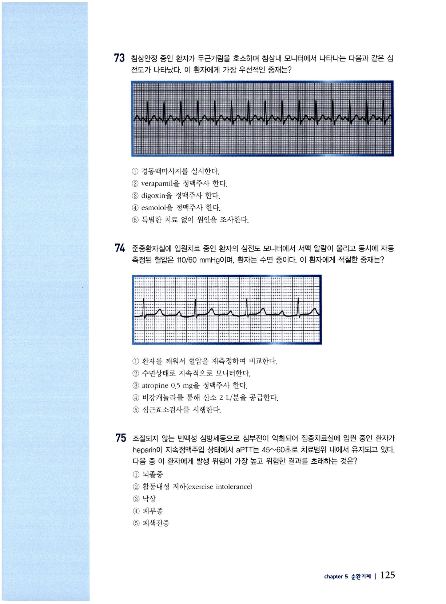
문 74 서맥 알람·중재
준중환자실에 입원치료 중인 환자의 심전도 모니터에서 서맥 알람이 울리고 동시에 자동 측정된 혈압은 110/60 mmHg이며, 환자는 수면 중이다. 이 환자에게 적절한 중재는?
- 환자를 깨워서 혈압을 재측정하여 비교한다
- 수면상태로 지속적으로 모니터한다
- atropine 0.5 mg을 정맥주사 한다
- 비강캐뉼라를 통해 산소 2 L/분을 공급한다
- 심근효소검사를 시행한다
문 75 심방세동 합병증
조절되지 않는 빈맥성 심방세동으로 심부전이 악화되어 집중치료실에 입원 중인 환자가 heparin이 지속정맥주입 상태에서 aPTT는 45~60초로 치료범위 내에서 유지되고 있다. 다음 중 이 환자에게 발생 위험이 가장 높고 위험한 결과를 초래하는 것은?
- 뇌졸중
- 활동내성 저하(exercise intolerance)
- 낙상
- 폐부종
- 폐색전증
문 76 디곡신 독성 심전도
Digoxin을 복용 중인 환자의 심전도가 다음과 같을 때 우선적으로 시행해야 할 중재 중 가장 적절한 것은?
- 고박동조율(overdrive pacing)
- 투여 중인 digoxin 중단
- digoxin 0.25 mg 추가 투약
- adenosine 6 mg 투약
- 경동맥 마사지
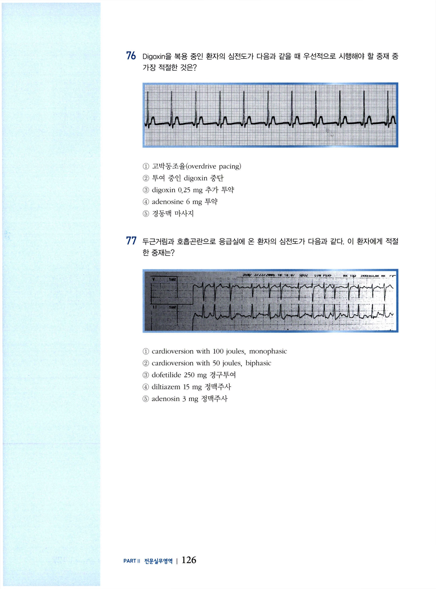
문 77 심전도·중재
두근거림과 호흡곤란으로 응급실에 온 환자의 심전도가 다음과 같다. 이 환자에게 적절한 중재는?
- cardioversion with 100 joules monophasic
- cardioversion with 50 joules biphasic
- dofetilide 250 mg 경구투여
- diltiazem 15 mg 정맥주사
- adenosin 3 mg 정맥주사
문 78 디곡신 독성 의심
심방세동을 진단받고 정기적으로 외래 방문 중인 환자의 심전도가 다음과 같을 때 독성이 의심되는 약물은?
- amiodarone
- digoxin
- diltiazem
- lidocaine
- metoprolol
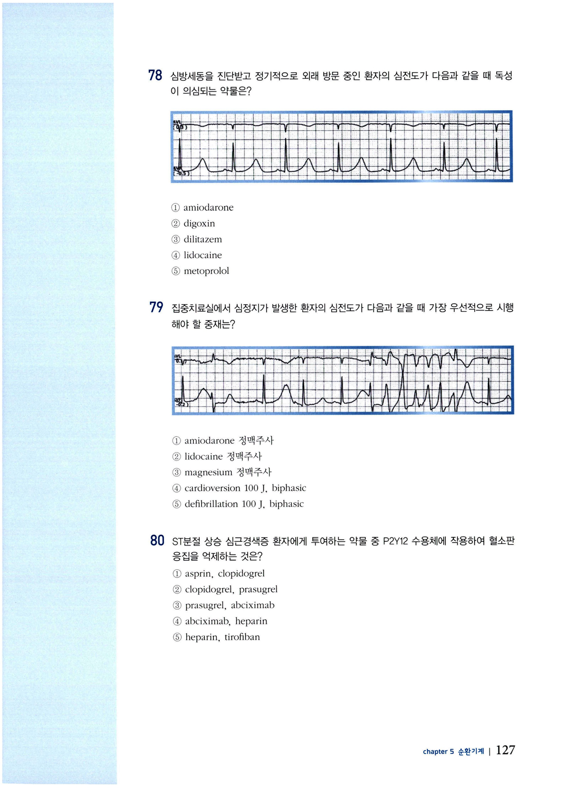
문 79 심정지 심전도·중재
집중치료실에서 심정지가 발생한 환자의 심전도가 다음과 같을 때 가장 우선적으로 시행해야 할 중재는?
- amiodarone 정맥주사
- lidocaine 정맥주사
- magnesium 정맥주사
- cardioversion 100 J, biphasic
- defibrillation 100 J biphasic
문 80 P2Y12 수용체 억제제
ST분절 상승 심근경색증 환자에게 투여하는 약물 중 P2Y12 수용체에 작용하여 혈소판 응집을 억제하는 것은?
- aspirin, clopidogrel
- clopidogrel, prasugrel
- prasugrel, abciximab
- abciximab, heparin
- heparin, tirofiban
문 81 직접 트롬빈 억제제
직접 thrombin에 작용하여 혈소판 응집을 억제하고 작용시간과 반감기가 짧아 출혈 위험이 높은 경피 관상동맥중재술이 필요한 ST분절 상승 심근경색증 환자에게 투여하는 약물은?
- heparin
- tirofiban
- bivalirudin
- enoxaparin
- reteplase
문 82 STEMI 재관류 선택
평소 건강하던 환자가 가슴이 터지는 듯한 흉통이 지속되어 응급실로 왔다. 활력징후는 혈압 140/70 mmHg, 맥박수 85회/분, 호흡수 22회/분, SpO₂ 96%이고 심전도가 다음과 같다. 이 환자에게 적절한 중재는?
- 증상이 발생한 후 4시간이 경과했다면 혈전용해술을 우선 고려한다
- 증상 발생시간과 무관하게 관상동맥중재술을 우선 고려한다
- 이전에 심근경색증 경력이 있다면 관상동맥중재술을 우선 고려한다
- 급성 심부전이 발생한 경우 혈전용해술을 우선 고려한다
- 혈소판응집억제제의 복용 여부에 따라 관상동맥중재술을 고려한다
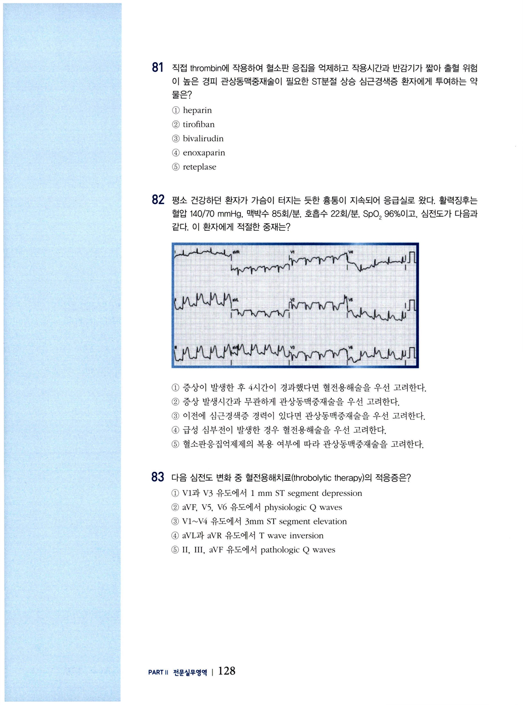
문 83 혈전용해 적응증
다음 심전도 변화 중 혈전용해치료(thrombolytic therapy)의 적응증은?
- V1과 V3 유도에서 1 mm ST segment depression
- aVF, V5, V6 유도에서 physiologic waves
- V1~V4 유도에서 3mm ST segment elevation
- aVL과 aVR 유도에서 T wave inversion
- II, III, aVF 유도에서 pathologic Q waves
문 84 ACS 위험도 척도
급성 관동맥증후군 환자의 위험도를 평가하여 입원 직후부터 6개월까지 사망률을 예측하는 척도는?
- CRUSADE score
- EuroSCORE
- Killip class
- GRACE score
- Framingham risk score
문 85 재관류 근거
관상동맥조영술에서 proximal LAD의 TIMI 0를 확인한 후 관상동맥중재술을 시행한 환자가 적절하게 재관류되었다고 판단할 수 있는 근거는?
- 치료 후 1시간 이내에 CK-MB 수치 상승
- 치료 후 1시간 이내에 CK-MB와 troponin 수치 감소
- 부정맥 발생
- 상승된 ST분절 회복
- T파 역전
문 86 수술 전 항혈소판제 중단
6개월 전 약물방출스텐트를 삽입한 후 약물복용 중인 환자가 1주일 전 발생한 비ST분절 상승 심근경색증으로 관상동맥우회술이 예정되어 있다. 다음 복용 중인 약물 중 수술 전에 복용을 중단해야 하는 시점이 옳은 것은?
- clopidogrel 수술 5일 전
- prasugrel 수술 5일 전
- ticagrelor 수술 7일 전
- aspirin 10일 전
- heparin 1일 전
문 87 혈전용해 절대금기
다음 중 급성 심근경색증 환자에게 혈전용해제 치료를 하면 절대 안 되는 경우는?
- 혈압 210/110 mmHg
- 3일 전 일과성 허혈발작(transient ischemic attack; TIA)의 과거력이 있는 경우
- 2년 전 허혈성 뇌졸중의 과거력이 있는 경우
- 75세
- 스텐트 삽입 과거력이 있는 경우
문 88 심근경색 후 베타차단제
급성 심근경색증과 관련된 합병증이나 사망률을 감소시키기 위해 금기가 아닌 경우 모든 심근경색 후 환자 또는 5~28일 내의 급성기 환자에게 투여해야 하는 약물은?
- Calcium channel blockers
- Magnesium sulfate
- Lidocaine
- Beta blockers
- Nitrates
문 89 베타차단제 투여 전 확인
급성 심근경색증 치료 후 합병증과 사망률을 감소시키기 위해 베타차단제를 투여할 때 확인해야 하는 사항은?
- 갑상선기능항진증 여부
- 울혈성 심부전 여부
- 심실상성 빈맥 여부
- 편두통 여부
- 천식이나 만성폐쇄폐질환 여부
문 90 하벽 STEMI 중재
16시간 전부터 aspirin과 nitroglycerin을 복용했지만 효과가 없는 흉통이 간헐적으로 발생한 환자가 집중치료실에 입원하였다. 12유도 심전도 상 leads II, III, aVF에서 ST분절이 상승되어 있을 때 이 환자에게 가장 적절한 중재는?
- streptokinase 등의 혈전용해제 치료
- 개심술이 가능한 병원으로 전원
- heparin, Gp IIb/IIIa inhibitor 투약
- 관상동맥중재술이 가능한 시설로 이동
- nitroglycerin 정맥주사 투여량 증가
문 91 혈관미주신경 반응
관상동맥중재술 후 sheath를 제거하는 동안 환자의 심장박동수가 40회/분으로 감소되고 혈압 80/50 mmHg, 환자는 메스꺼움을 호소한다. 다음 중 적절한 치료는?
- 계속해서 환자를 모니터하면 심박동수와 혈압이 5분 내에 이전 상태로 회복될 것이다
- 혈관미주신경 반응을 치료하기 위해 atropine 0.5 mg을 정맥주사 한다
- 메스꺼움을 감소시키기 위해 prochlorperazine (Compazine) 10 mg을 정맥주사 한다
- 후복막출혈의 가능성이 있으므로 주치의에게 알린다
- 기도내관 삽관을 준비한다
문 92 스텐트 후 서혜부 통증
스텐트 삽입술 후 1시간이 지난 환자가 허리와 서혜부의 통증을 호소한다. 활력징후는 혈압 100/70 mmHg, 심장박동수 112회/분, 호흡수 20회/분이다. 출혈은 관찰되지 않을 때 이 환자에게 가장 적절한 중재는?
- 12유도 심전도검사
- 통증완화를 위해 morphine 2 mg 정맥주사
- 혈청 hemoglobin, hematocrit검사
- 혈청 CK-MB, Troponin I 검사
- 특별한 치료가 필요하지 않음
문 93 중재술 직후 위험
불안정 협심증 진단을 받고 집중치료실에 입원 중인 환자가 저분자량헤파린, aspirin, captopril을 투약 중이며 eptifibatide와 nitroglycerin은 지속 정맥주입 상태이다. 다음 중 심도자술과 관상동맥중재술 직후 가장 위험이 높은 것은?
- 서혜부 천자부위 출혈
- 관상동맥 경련
- 재협착
- 헤파린에 의한 혈소판감소증(Heparin-induced thrombocytopenia)
- 부정맥
문 94 좌심도자술 합병증
다음 중 좌심도자술 후에 발생 가능한 합병증은?
- 뇌졸중
- 폐색전증
- 홍조
- 오심
- 서맥
문 95 유두근파열/VSD 합병증
62세 남자 환자가 급성 심내막 심근경색증(acute endocardial infarction)으로 입원 중이다. 현재 흉통은 없고 활력징후는 정상 범위 내에 있다. 환자는 간호사와 얘기하던 중 갑작스런 호흡곤란을 호소하여, 혈압 80/50 mmHg, 맥박수 118회/분, 호흡수 34회/분이다. 심음은 들리지만 새로 생긴 수축기 심잡음이 청진되고 혈역학적 지표가 다음과 같다. 이 환자에게 적절한 중재는?
PAP: 38/25, PAOP: 24, CVP: 7, Cardiac output: 3.2, Cardiac index: 1.7
- 즉각적인 수술
- dopamine, nitroprusside 투여
- 다량의 수액 공급
- 혈전용해제 치료
- 관상동맥중재술
문 96 Forrester 분류 약물
급성 심부전의 임상상태를 Cardiac index와 PCWP 두 지표를 이용하여 분류하는 Forrester 분류법에 따라 "E"의 상태일 때 적절한 약물치료는? (분류 도표: A 정상관류/정상, B 폐울혈, C 저관류, D/E 중증 저관류·폐울혈 등)
- Digoxin
- 수액 투여
- Vasodilators
- Inotropics
- Vasopressor
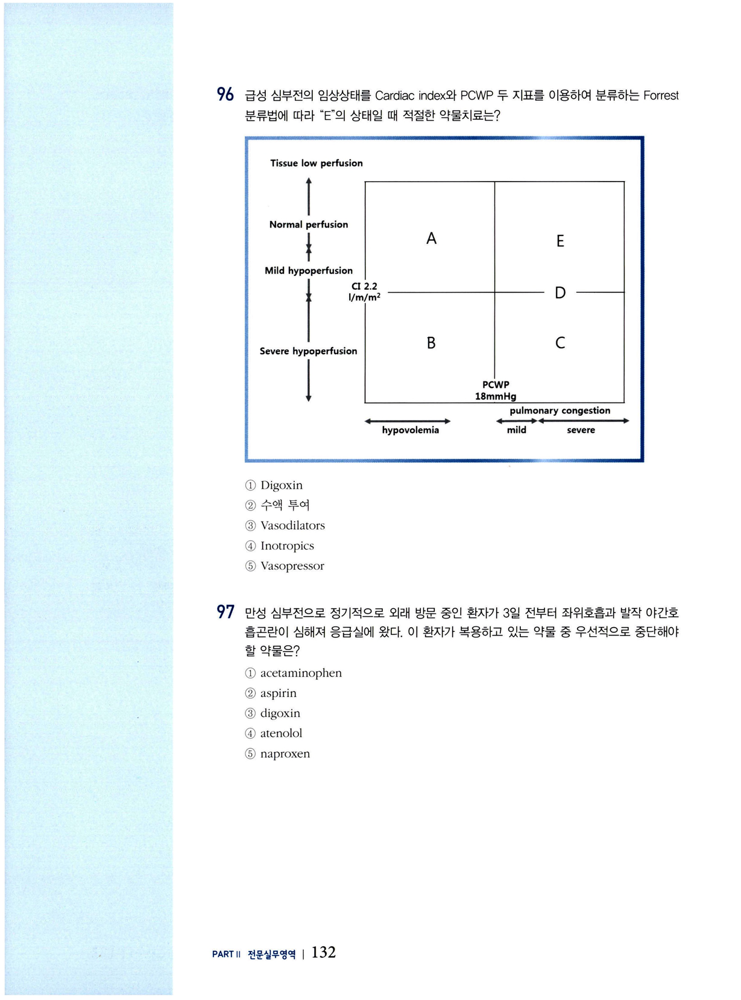
문 97 만성 심부전 중단 약물
만성 심부전으로 정기적으로 외래 방문 중인 환자가 3일 전부터 좌위호흡과 발작 야간호흡곤란이 심해져 응급실에 왔다. 이 환자가 복용하고 있는 약물 중 우선적으로 중단해야 할 약물은?
- acetaminophen
- aspirin
- digoxin
- atenolol
- naproxen
문 98 심부전 유발 원인
당뇨병과 천식을 진단받고 정기적으로 외래 추적관찰 중인 75세 환자가 1개월 전부터 NYHA 기능등급 II 정도의 호흡곤란 증상이 있어 외래에 방문하였다. 심전도는 다음과 같고 심초음파 상 좌심실 박출률이 45%, NT-proBNP 350 pg/mL일 때 이런 상태를 유발한 원인으로 가장 의심되는 것은?
- 심근경색증
- 서맥
- 당뇨병
- 천식
- 고령
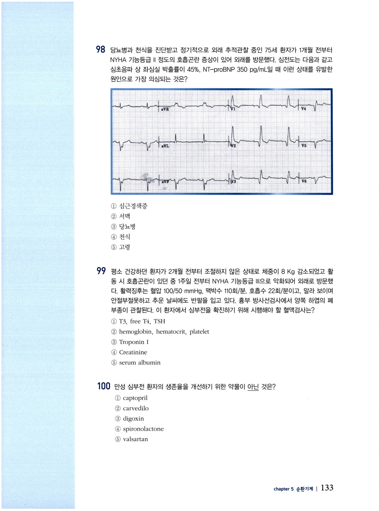
문 99 갑상선기능항진 심부전
평소 건강하던 환자가 2개월 전부터 조절하지 않은 상태로 체중이 8 Kg 감소되었고 활동 시 호흡곤란이 있던 중 1주일 전부터 NYHA 기능등급 III으로 악화되어 외래로 방문했다. 활력징후는 혈압 100/50 mmHg, 맥박수 110회/분, 호흡수 22회/분이고 말라 보이며 안절부절못하고 추운 날씨에도 반팔을 입고 있다. 흉부 방사선검사에서 양쪽 하엽의 폐부종이 관찰된다. 이 환자에서 심부전을 확진하기 위해 시행해야 할 혈액검사는?
- T3, free T4, TSH
- hemoglobin, hematocrit, platelet
- Troponin I
- Creatinine
- serum albumin
문 100 생존율 개선 약물 아닌 것
만성 심부전 환자의 생존율을 개선하기 위한 약물이 아닌 것은?
- captopril
- carvedilol
- digoxin
- spironolactone
- valsartan
문 101 교감신경자극제 주의
도파민과 같은 교감신경자극제는 혈류량이 교정되지 않은 상태에서는 투여 시 주의가 필요하다. 다음 중 그 이유를 가장 잘 설명한 것은?
- 강력한 교감신경자극이 있으므로 적절한 체액량이 없다면 효과를 나타내지 못한다
- 교감신경 자극은 혈관확장이 일차적인 문제일 경우에만 작용한다
- 교감신경 자극은 혈관의 압수용체가 비활성화될 때까지 나타나지 않는다
- 저혈량증에서 수액을 보충하기 전에 도파민을 투여해야 한다
- 약물용량을 증가시키면 말초혈관 투과성을 변화시킨다
문 102 맥박수 감소·이바브라딘
좌심실 박출률이 35% 이하인 환자에게 심근수축력에 영향을 주지 않고 맥박수만 감소시켜 만성 심부전의 증상을 개선하는 효과를 기대할 수 있는 약물은?
- amiodarone
- ivabradine
- metoprolol
- milrinone
- carvedilol
문 103 Furosemide·일회박출량
Furosemide (Lasix)가 일회박출량(stroke volume)에 있어서 일차적으로 영향을 미치는 요인은?
- 전부하
- 후부하
- 수축력
- 대동맥 확장성
- 말초혈관 저항
문 104 스피로노락톤+ACEI 부작용
spironolactone 치료 중인 환자에게 안지오텐신전환효소억제제에 의해 나타날 수 있는 부작용은?
- 고혈압
- 고칼륨혈증
- 신기능부전
- 단백뇨
- 저혈량증
문 105 급성 심부전 치료(혈역학)
77세 남자가 호흡곤란, 좌위호흡, 점진적인 운동내성 감소로 입원하였다. 환자는 진료를 받아본 적이 없다고 말한다. 전반적으로 양쪽 하엽에서 수포음이 청진된다. 폐동맥카테터를 통한 혈역학적 지표 수치는 다음과 같다. 이 환자의 증상 개선을 위해 가장 효과적인 치료는?
혈압 118/70 mmHg, 맥박수 110회/분, 호흡수 28회/분, 체온 37.1℃, SpO₂ 88%, Cardiac index 2.2, Stroke index 20, PAP 36/22, PAOP 20, CVP 6
- 산소 공급
- phenylephrine
- furosemide
- carvedilol
- dopamine
문 106 후부하 감소 조합
심부전에서 이뇨제와 병용투여했을 때 후부하를 가장 효과적으로 감소시킬 수 있는 조합은?
- Digoxin과 beta-blockers
- Low-sodium diet와 fluid restriction
- Nitrates와 ACE inhibitors
- Nesiritide (Natrecor)와 digoxin
- beta-blocker와 calcium channel blockers
문 107 심장재동기화치료(CRT)
심부전 환자에서 좌심실 박출률이 35% 이하이고 QRS 간격(duration)이 증가하여 예후가 나빠지는 환자에게 심실의 여러 부위에 심박조율을 시행하여 증상 개선 및 사망률과 재입원율을 감소시키는 중재는?
- 대동맥내풍선펌프
- 심율동전환 제세동기
- 삽입형 박동조율기
- 심실보조장치
- 심장재동기화치료
문 108 혈관확장제(심부전)
혈관확장제는 좌심실기능부전에서 심근의 산소소모량을 감소시키는 데 도움이 된다. 다음 중 울혈 심부전 치료에 도움이 되는 혈관확장제는?
- beta blockers (eg. carvedilol)
- inotropes (eg. dobutamine)
- diuretics (eg. Lasix)
- calcium channel blockers (eg. nicardipine)
- alpha blockers (eg. doxazosin)
문 109 중단해야 할 약물(혈역학)
울혈 심부전을 진단받고 치료 중인 환자의 혈역학적 지표가 다음과 같을 때 중단해야 하는 약물은?
Arterial pressure: 44/26, PAOP: 25, CVP: 15, Cardiac output: 3.7, Cardiac index: 1.6, SVO₂: 0.40
- 안정 협심증 치료를 위해 장기복용 중인 Nifedipine (Procardia XL)
- 고혈압 치료를 위해 복용 중인 Hydrochlorothiazide (Hydro DIURIL)
- 고혈압 치료를 위해 복용 중인 Enalapril (Vasotec)
- 두통 치료를 위해 복용 중인 Butalbital (Esgic)
- 치과치료 후 복용 중인 penicillin
문 110 네시리타이드 저혈압
심부전이 급격히 악화되어 nesiritide (Natrecor)를 0.1 mcg/Kg/min로 지속적으로 주입 중인 환자가 활력징후는 혈압 78/48 mmHg, 심장박동수 116회/분, 호흡수 28회/분이고 BiPAP mask를 통해 40%의 산소 공급을 하는 상태에서 산소포화도 90%이다. 심전도에서 조기심방수축을 동반한 동성빈맥이 보인다. 이 환자에게 우선적인 중재는?
- nesiritide (Natrecor) 주입을 중단한다
- 환자가 앙와위를 취하게 한다
- 생리식염수 250 mL를 빠르게 정맥주입 한다
- furosemide (Lasix) 40 mg을 추가하여 정맥주사 한다
- dopamine 3 mcg/Kg/min을 추가하여 정맥주입 한다
문 111 하벽 MI·심부전 치료
72세 남자가 급성 하벽 심근경색증(acute inferior wall myocardial infarction)을 진단받고 입원 중이다. 환자는 말초혈관질환과 만성폐쇄폐질환(COPD)의 과거력이 있다. 환자를 관찰하던 중 호흡곤란이 시작되었고 12유도 심전도에서 V1~4까지 ST분절 하강이 관찰된다. 호기 색색거림(expiratory wheezing)과 함께 폐하엽에서 수포음이 들리고 S3와 수축기 심잡음이 II/VI 정도로 들리고 현재 비강캐뉼라를 통해 산소가 2 L/분으로 공급되고 있으며 SpO₂는 95%이고 동맥혈가스분석 결과가 pH 7.37, PaCO₂ 52 mmHg, PaO₂ 69 mmHg, HCO₃ 33 mEq/L이다. cardiac biomarker는 CK-MB 4, Troponin 0.1이고 혈역학적 지표는 다음과 같을 때 이 환자의 증상을 호전시킬 수 있는 최선의 치료는?
혈압 104/60 mmHg, 맥박수 101회/분, Stroke index 20, Cardiac index 2.0, PAP 40/24, PAOP 22, Central venous pressure (CVP) 11
- 산소공급과 혈전용해법
- vasopressin 투여
- nitroprusside와 수액 투여
- dobutamine과 lasix 투여
- 관상동맥중재술
문 112 심인성 폐부종 약물
심근경색증이 의심되는 58세 남자가 저혈압상태로 입원했다. 혈압 82/52 mmHg, 맥박수 122회/분이고 환자는 현저한 좌위호흡과 극도로 불안증상을 보이며, 양 하엽에서 수포음이 청진된다. 1시간 이내로 폐동맥카테터를 삽입하기로 결정한 상태에서 환자에게 가장 먼저 투여해야 할 약물은?
- 고용량의 dopamine과 nitroprusside
- furosemide와 milrinone
- dobutamine과 epinephrine
- digitalis와 furosemide
- milrinone과 epinephrine
문 113 니트로프루시드+도부타민
울혈 심부전 환자에게 nitroprusside와 dobutamine이 투약되고 있다면 기대하는 효과는?
- 전부하 감소와 수축력 증가
- 전부하 증가와 후부하 감소
- 후부하 감소와 수축력 감소
- 후부하 감소와 수축력 증가
- 후부하 증가와 수축력 감소
문 114 Furosemide+morphine 기전
폐부종이 있는 환자에게 furosemide (Lasix)와 morphine이 투여되었을 때 심근기능을 개선하는 데 효과를 미치는 생리적 기전은?
- 전부하와 심근의 산소소모량 감소
- 후부하와 심근의 산소소모량 감소
- 전부하 증가와 수축력 향상
- 후부하 증가에 따른 수축력 향상
- 전부하 증가와 후부하 증가
문 115 말기 심부전 초기 중재
집중치료실에 입원 중인 말기 심부전 환자가 활력징후는 혈압 80/66 mmHg, 심장박동수 86회/분, 호흡수 26회/분이다. 60% BiPAP facemask를 적용하고 있으며 양쪽 폐저부에서 수포음이 청진된다. 집에서 복용했던 약물은 furosemide, atenolol, potassium, captopril이다. 입원 중 시행한 혈액검사 결과는 albumin 2.0 g/dL, HCT 52%, BUN 62 mg/dL, creatinine 3.0 mg/dL이다. 이 환자에게 적절한 초기 중재는?
- dobutamine을 정맥주입 한다
- norepinephrine (Levophed)을 정맥주입 한다
- normal saline 250 mL를 급속 정맥주입 한다
- furosemide(Lasix) 40 mg을 정맥주사 한다
- dopamine을 고용량으로 정맥주입 한다
문 116 전벽 MI 후 폐부종 중재
4일 전 전벽 심근경색증(anterior MI)을 진단받고 입원 중인 환자가 호흡곤란이 심해져서 집중치료실로 전동되었고 신체검진 결과가 다음과 같다. 이 환자에게 가장 우선적인 중재는?
V/S: BP 110/82 mmHg, HR 128회/분, RR 36회/분, T 37.6℃, SpO₂ 88%
Lung sound: Coarse, bilateral crackles in lower lobes, poor respiratory effort
Heart Sound: S1, S2, S3
Skin: Flushed, diaphoretic, pedal edema 2+
ECG: Sinus tachycardia, left ventricular hypertrophy
- 동맥혈가스분석
- nesiritide 정맥주입
- 기관내관삽관 준비
- 심폐소생술팀 호출
- Troponin I 검사
문 117 전벽 MI 후 호흡곤란 원인
4일 전 전벽 심근경색증(anterior MI)을 진단받고 입원 중인 환자가 호흡곤란이 심해져서 집중치료실로 전동되었고 신체검진 결과가 다음과 같다. 이 환자의 호흡곤란에 가장 큰 영향을 미친 것은?
V/S: BP 110/82 mmHg, HR 128회/분, RR 36회/분, T 37.6℃, SpO₂ 88%
Lung sound: Coarse, bilateral crackles in lower lobes, poor respiratory effort
Heart Sound: S1, S2, S3
Skin: Flushed, diaphoretic, pedal edema 2+
ECG: Sinus tachycardia, left ventricular hypertrophy
- 폐부종을 동반한 급성 심부전 악화
- 급성호흡곤란증후군(ARDS)을 동반한 갑작스런 패혈 쇼크
- 급성 불안발작
- 저혈량 쇼크
- 분배성 쇼크
문 118 급성 심부전 약물(틀린 것)
급성 심부전 환자의 약물치료에 대한 설명으로 옳지 않은 것은?
- 울혈 증상이나 징후가 있으면서 저혈압인 경우 dobutamine을 투여한다
- Dobutamine과 Milrinone은 cAMP를 증가시켜 심근수축력을 증가시킨다
- Digoxin은 심부전 환자의 생존율을 향상시키기 위해 투여되어야 한다
- 이뇨제를 투여하는 중에도 울혈이 호전되지 않으면 vasodilator를 투여할 수 있다
- 흉통이나 불안, 호흡곤란 시 단기간 증상조절을 위해 morphine을 투여한다
문 119–121 심인성 쇼크·다혈관 질환(공유 지문)
심한 호흡곤란과 발한으로 응급실에 온 환자가 활력징후는 혈압 110/90 mmHg, 심장박동수 110회/분(불규칙함), SpO₂ 83%이고, 경정맥압(JVD)은 8.7 mmHg이며, 양쪽 폐하엽에서 수포음이 들리고 심음 청진 시 S1, S2, S3가 들린다. 동맥혈가스분석 결과가 pH 7.51, PaO₂ 60 mmHg, PaCO₂ 28 mmHg, SaO₂ 93%임을 확인한 후 산소를 비강캐뉼라를 통해 4 L/분으로 공급 중이다. 심전도에서 좌심실비대와 좌각차단(left bundle branch block)이 보이고 흉부 방사선검사에서는 심장크기가 커져 있고 심장 주변으로 양측 침윤(bilateral infiltration)이 보인다. 폐동맥카테터를 삽입하여 측정한 혈역학적 지표는 다음과 같다.
RA: 10 mmHg, PA: 41/35 mmHg, PAOP: 32 mmHg, CO: 3.8 L/min, CI: 1.9 L/min/m²
관상동맥조영술을 시행한 결과 LAD 95% occlusion, RCA 50% occlusion, LCX 75% occlusion이 있으며, 심초음파검사에서 EF 28%이다.
이 환자에게 Dobutamine 지속주입과 Furosemide 정맥주사가 처방되었다면 그 목적은?
- 심근수축력 증가와 심실 전부하 감소
- 심근수축력 증가와 심실 후부하 감소
- 심근수축력 감소와 심실 전부하 증가
- 심근수축력 증가와 심실 후부하 증가
- 심근수축력 증가와 심실 전부하 증가
이 환자에게 dobutamine과 furosemide를 정맥주사 했을 때 기대하는 효과는?
- 심장박동수 120회/분; PA 40/38; PAOP 변화 없음
- 심장박동수 110회/분; PA 32/25 mmHg; PAOP 24 mmHg
- 심장박동수 95회/분; PA unchanged; RA 14 mmHg
- 혈압 105/80 mmHg; PA 49/38 mmHg; RA 14 mmHg
- 혈압 130/70 mmHg; PA 40/38; PAOP 변화 없음
관상동맥조영술 결과를 토대로 이 환자에게 가장 적절한 중재는?
- 심장이식대체수술(destination therapy: DT)로서 HeartMate II LVAD 삽입
- 좌심실류제거술(ventricular aneurysmectomy) 및 재건수술(reconstruction surgery)
- 승모판막성형술(mitral valve repair)
- 양심실 박동조율기(dual chamber biventricular pacemaker) 삽입
- 심장이식
문 122 유두근파열 심인성 쇼크
유두근 파열을 동반한 급성 심근경색증에 의해 초래된 심장성 쇼크 상태의 환자에게 즉시 적용해야 할 적절한 중재는?
- 관상동맥우회술과 승모판막치환술
- 환자를 안정화 시킨 후 관상동맥중재술과 승모판막치환술
- 환자를 안정화 시킨 후 혈전용해제 치료
- 승압제와 대동맥내풍선펌프 적용
- 좌심실보조장치 삽입
문 123–125 심인성 쇼크(공유 지문)
49세 남자가 거실에서 쓰러진 상태로 발견되었고 숨은 쉬고 있지만 피부는 차고 축축한 상태로 응급실에 왔다. 도착 당시 활력징후는 혈압 68/44 mmHg, 심장박동수 122회/분, 호흡수 33회/분, 체온 36.1℃, SpO₂ 91%(마스크로 60% 산소 공급 중)이었고 생리식염수가 정맥으로 450 mL 주입되었고 현재 full drip 중이며, Dopamine을 5 mcg/Kg/min 정맥주사 하기 시작했다. 심전도 상 V2~4 유도에서 ST분절이 상승되어 있고 II, III, aVF 유도에서 역변화(reciprocal change)가 보인다. 심초음파에서 LVEF 13%, left ventricular akinesia, 관상동맥조영술에서 proximal LAD 99% stenosis, mid RCA 70% stenosis, LCX 정상이며, 관상동맥중재술을 시행하였다. 집중치료실 입실 직후 혈역학적 지표는 다음과 같다.
PA: 45/25 mmHg, RA: 15 mmHg, PAOP: 22 mmHg, CO: 4.0 L/min, CI: 1.5 L/min/m²
이 경과를 통해 알 수 있는 환자의 쇼크 유형은?
- Hypovolemic shock
- Distributive shock
- Cardiogenic shock
- Neurogenic shock
- Septic shock
이 환자에게 시행되어야 할 중재의 목적은?
- 심근부하 감소
- 폐혈관 확장
- 이뇨작용
- 산소공급을 개선하기 위한 기도내관삽관
- 전부하 감소
이러한 목적을 달성하기 위한 다음 단계로 시행할 중재는?
- 후부하 감소를 위한 혈관확장제 투여
- 전부하 증가를 위한 수액 투여
- Dopamine을 최대 75 mcg/Kg/min 정맥주입
- 대동맥내풍선펌프 삽입
- 심실보조장치 삽입
문 126 승모판막질환 약물치료
승모판막질환의 약물치료는?
- 울혈 감소를 위한 이뇨제를 투여하여 호흡곤란을 치료한다
- 디곡신, 베타차단제, 칼슘통로차단제를 투여하여 심실박동수를 감소시킨다
- 판막역류를 감소시키기 위해 항고혈압제를 투여하여 전후하를 감소시킨다
- 세균감염을 치료하기 위해 항생제를 투여한다
- 혈전형성 방지를 위해 와파린을 투여한다
문 127 대동맥판막협착증 증상
다음 중 aortic valve stenosis에 의한 특징적 증상은?
- fatigue, dyspnea, pulmonary edema
- fatigue, dyspnea, atrial fibrillation
- fatigue, syncope, angina
- fatigue, syncope, pulmonary edema
- fatigue, pulmonary edema, ascites
문 128 심내막염 예방(페니실린 알레르기)
페니실린 알레르기가 있는 환자에게 심내막염 예방을 위해 투여 가능한 약물은?
- erythromycin
- dicloxacillin
- azithromycin
- ofloxacin
- ceftriaxone
문 129 감염성 심내막염
infective endocarditis에 대한 설명으로 옳은 것은?
- CABG는 수술 후 infective endocarditis 고위험 환자이다
- 손가락 발가락에 단단한 작은 nodule 양상의 Janeway lesion이 있을 수 있다
- 손발의 작고 딱딱한 말초출혈 양상의 Osler's node가 있을 수 있다
- 발열이 가장 흔한 증상이며 심잡음이 청진된다
- 침습적 처치 전에 항상 cephalosporin계 항생제를 투여한다
문 130 대동맥박리 수술 전 약물
대동맥박리 수술 전 sodium nitroprusside와 esmolol을 투여할 때 주의해야 할 것은?
- 두 약물은 MAP of 70 mmHg, HR of 70/min을 유지할 수 있도록 용량을 조절해야 한다
- nitroprusside는 SBP <140 mmHg, esmolol은 HR <100/분이 유지되도록 용량을 조절해야 한다
- nitroprusside 10 mcg/Kg/min 이상 주입 시에도 SBP가 감소되지 않으면 esmolol을 추가하여 MAP 60 mmHg가 되도록 용량을 조절해야 한다
- SBP가 120-140 mmHg가 되도록 esmolol 용량을 조절한다
- 심장박동수가 60회/분까지 감소하면 esmolol을 중단하고 nitroprusside로 대체한다
문 131 Stanford type A 대동맥박리
aortic dissection (Stanford type A)이 관찰되는 환자에 대한 설명으로 옳은 것은?
- ascending aorta에 국한된 병변이다
- ascending~descending aorta에 병변이 있다
- 약물치료 후 병변이 증가할 때 수술한다
- 통증부위는 병변진행부위와 관련이 없다
- 신체 장기로 가는 혈류는 false lumen에 의해 공급된다
문 132 대동맥류 증상
대동맥류 환자의 가장 흔한 증상은?
- 복통
- 파행(claudication)
- 대부분 무증상
- 호흡곤란
- 변비
문 133 MI 이차예방(틀린 것)
급성 심근경색증 치료 후 증상이 호전되고 혈역학적으로 안정되어 퇴원예정이다. 다음 중 이차적 예방을 위한 계획으로 옳지 않은 것은?
- 좌심실 부전이 없다면 베타차단제가 처방되어야 한다
- 좌심실 부전이 있더라도 ACE-inhibitor는 처방되어야 한다
- renal failure나 hyperkalemia가 없다면 aldosterone blocker를 고려한다
- 좌심실 부전이 없다면 calcium channel blocker가 처방되어야 한다
- 항혈소판제나 항응고제가 처방되어야 한다
문 134 심장재활(틀린 것)
심장재활에 대한 설명으로 옳지 않은 것은?
- 입원 치료 중에는 심장재활 1단계를 적용할 수 있다
- 입원 치료 중에는 심장재활 2단계를 적용할 수 있다
- 운동 시 대상자의 주관적 운동강도인지도(RPE)를 적용한다
- 운동 전후 반드시 정리운동과 준비운동을 시행한다
- 활동 시 산소소모량에 따라 가능한 활동내용을 처방할 수 있다
문 135 와파린 INR 관리
심방세동으로 와파린을 복용하고 있는 50세 여자가(INR 3.0 유지) 이전에 쿠마딘 복용 시 INR 2.4를 유지하면서 안정적이었다. 매일 쿠마딘 5 mg을 복용하고 있는 환자에게 이 검사 결과를 토대로 해야 할 중재는?
- 1주간 coumadine 복용 중단 후 2.5 mg 투여
- 2.5 mg으로 감량 후 3일 째 INR 재검
- vitamine K 투여 및 coumadine 2.5 mg으로 감량
- 2주 후 INR 재검, 녹황색 채소를 과잉섭취하지 않도록 교육하고 관찰
- 환자가 정확하게 coumadine을 복용하는지 확인하고 식습관의 변동이 없었다면 동일 용량의 쿠마딘 복용 후 INR 재검
문 136 CABG 후 심방세동 약물(틀린 것)
관상동맥우회술(CABG)을 받고 수술 4일째인 50세 환자가 심방세동이 나타나고 심실 박동수 140회/분, 혈압 120/70 mmHg, 산소포화도 95%이다. 다음 중 심실 박동수 조절을 위한 적절한 약물이 아닌 것은?
- Digoxin
- Verapamil
- Nifedipine
- Metoprolol
- Carvedilol
문 137–138 CABG 후 종격동 출혈(공유 지문)
57세 남자가 관상동맥우회술 후 집중치료실에 입원했다. 4AM에 의식이 명료하여 어려움 없이 기관내관을 제거하였다. 5AM에 진통제가 투여되지 않았는데도 환자가 기면상태였고, 한 시간 동안 흉관을 통해 500 mL가 배액되었다. 환자의 활력징후와 혈역학적 지표는 다음과 같다.
(4AM → 5AM) 혈압 100/70 → 100/66, 심장박동수 100 → 110, PAOP 15 → 10, CVP 10 → 7, Cardiac index 2.5 → 2.4, PaO₂ 82 → 77, PaCO₂ 39 → 37, pH 7.37 → 7.35, HCO₃ 24 → 23
이 환자에게 예상되는 문제는?
- 기흉
- 종격동 출혈
- 급성호흡부전
- 심부전
- 호흡성 산증
이 환자에게 필요한 즉각적인 중재는?
- 도부타민 투여
- 에피네프린 투여
- 수혈
- 흉관 추가 삽입
- 흉부물리요법
문 139 심장압전(역설맥)
68세 여자가 관상동맥우회술 후 집중치료실에 입원하였다. 8시간 후 발관을 하였고, 약간의 흉부불편감만 있는 상태였다. 1시간 뒤 환자는 흉부불편감이 조금 더 증가한다고 호소하였다. 흉막 튜브를 통해서는 배액이 되고 있고 종격동 튜브를 통해서는 배액량이 보이지 않았다. 혈압은 호흡에 따라 변동이 있는데 흡기 시 20 mmHg가 상승되었다. 흉부 청진상 호흡음은 깨끗하고 심음은 정상이나 소리는 감소되었다. 폐동맥카테터를 통한 정보는 다음과 같을 때 이 환자에게 필요한 중재는?
혈압 92/58 mmHg, 맥박 115회/분, PAP 36/22 mmHg, CVP 18 mmHg, CO 3.2 L/min, CI 1.9 L/min/m²
- 흉막 내 튜브 삽입
- 종격동 내 튜브 추가 삽입
- 도파민 주입
- 재삽관 및 인공호흡기 적용
- Nitroprusside 주입
문 140 수술 직후 저혈량
수술 직후 환자가 맥박 126회/분, 혈압 80/68 mmHg, PCWP 5 mmHg일 때, 다음 중 가장 필요한 중재는?
- 0.9% 생리식염수 250 mL 주입
- 농축혈색소 1pint 수혈
- 도파민 10 mcg/Kg/min 주입
- 바소프레신 40units 정맥 주입
- 5% 포도당 1,000 mL 주입
문 141 재수술 적응증
관상동맥우회술을 받은 환자가 다시 수술적 처치가 필요한 적응증은?
- 흉관배액관을 통해 2시간 동안 시간당 200 mL 이상의 혈액성 배액
- 도파민을 10 mcg/Kg/min 사용 중에도 2시간 동안 MAP 50 mmHg
- 심박출량 1.9 L/min
- PCWP 25 mmHg
- RAP 15 mmHg
문 142 ASD 교정 후 합병증
폐고혈압을 동반한 심방중격결손(ASD)으로 교정수술을 받은 환자가 2년 후 입원하였다. 이 환자에게 발생 가능한 합병증은?
- first degree AV block
- second degree AV block (type1)
- second degree AV block (type2)
- complete AV block
- Left bundle branch block
문 143 대동맥박리 약물 조절
대동맥박리 환자의 수술 전 nitroprusside와 esmolol을 가장 잘 사용하고 있는 경우는?
- nitroprusside와 esmolol 둘 다 사용하여 MAP 70 mmHg, HR 70회/분 유지
- SBP <140 mmHg 위해 nitroprusside 사용, HR <100회/분 위해 esmolol 주입
- SBP를 저하시키기 위해 nitroprusside를 10 mcg/Kg/min 이상 요구되는 경우 esmolol 추가하여 MAP <60 mmHg 유지
- SBP 120~140 mmHg로 감소시키기 위해 esmolol 사용; HR 60회/분 이하로 감소하면 esmolol 중지하고 nitroprusside 주입
- nitroprusside는 10 mcg/Kg/min로 고정 주입하면서 SBP 140 mmHg 이상 시 esmolol 추가 주입
문 144 CABG 후 부정맥
관상동맥우회술을 받은 환자에게 수술 후 1~3일째 가장 잘 나타날 수 있는 부정맥 종류는?
- 심방세동
- 심방조동
- 심실상성 빈맥
- 방실 회귀성 빈맥
- 방실결절 회귀성 빈맥
문 145 승모판 대치술 후 우심부전
승모판 대치술을 받은 환자의 RAP 18 mmHg, pulmonary artery diastolic pressure (PAD) 4 mmHg일 때, 가장 우선적인 중재는?
- 생리식염수 500 mL 주입
- Furosemide 40 mg IV
- Norepinephrine 0.1 mcg/Kg/min 주입
- vasopressin 40units IV
- Aldactone 25 mg PO
문 146 복부대동맥 수술 후 허혈성 결장염
복부대동맥 수술 후 2일째인 환자가 저혈압, 빈맥, 복부팽만, 설사를 보이고 백혈구 상승이 나타났다. 이러한 결과가 나타난 주요 원인은?
- 수술 후 이식편 감염
- 허혈성 결장염
- 대동맥-장간 루
- 대동맥 구획증후군
- 이식편대 숙주반응
문 147 심외막 조율기 와이어 제거
심장수술 후 심장외막 조율기 와이어를 제거하려고 할 때, 다음 중 바로 제거하면 안 되는 경우는?
- 혈압 122/68 mmHg, 맥박 58회/분
- 14시간 전에 저분자량 헤파린 30 mg 투여
- INR 1.1
- PTT 74초
- 혈소판 150,000/µL
문 148 CPB 영향
CPB에 의한 영향에 대한 설명으로 옳은 것은?
- catecholamine 분비에 의해 hypoglycemia가 있을 수 있다
- CPB circuit에 혈액이 노출되면서 보체계 활성화에 의한 혈전 형성 위험이 있다
- platelet나 RBC 손상에 의한 ARDS가 발생할 수 있다
- initial massive diuretics에 의한 hyperkalemia가 있을 수 있다
- cardiogenic solution에 의해 hyperglycemia가 있을 수 있다
문 149–150 흉부대동맥류·박리(공유 지문)
62세 남자가 흉골하 흉통으로 ICU에 입원하였다. 흉통은 니트로글리세린 투여 후에도 가라앉지 않았고 모르핀 투여 후에 감소되었다. 심전도는 정상이었고 흉부 방사선검사 상 종격이 넓어져 있으며 aortogram에서 흉부대동맥류가 발견되었다. 수축기혈압을 낮추기 위해 nitroprusside가 1.0 mcg/Kg/min으로 주입되기 시작하였다. 환자가 갑자기 등이 아프다고 소리쳤다. 환자의 신체사정 내용은 다음과 같다.
BP 190/100 mmHg, HR 110회/분, RR 30회/분, 피부 차고 축축함, 통증 10점(0~10점), 흉부 가운데와 견갑골 사이의 찢어질 듯한 통증
담당의사에게 보고했을 때, 예상되는 검사처방은?
- 흉부 방사선검사
- 흉부 CT
- 심도자술
- 흉부 MRI
- 심전도
이 환자에게 필요한 중재는?
- 수축기 혈압 <120 mmHg
- 이완기 혈압 <40 mmHg
- 심장박동수 <100회/분
- 심박출량 <2.0 L/min
- 통증점수 <4점
문 151 말기 심부전 초기 치료
말기 심부전으로 ICU에 입원한 환자의 맥박 86회/분, 혈압 80/66 mmHg, BiPAP 마스크를 통해 산소 60%를 공급하면서 호흡 26회/분이고 양쪽 폐저부에서 수포음이 들렸다. 지참약은 furosemide, atenolol, potassium, captopril이었다. 입원 시 혈액검사 결과 혈청 알부민 2.0 g/dL, HCT 52%, BUN 62 mg/dL, creatinine 3.0 mg/dL이었다. 이 환자에게 적절한 초기 치료는?
- 도부타민 주입 시작
- norepinephrine 주입 시작
- 생리식염수 250 mL 주입
- furosemide 40 mg IV 투약
- aldactone 25 mg 경구투약
문 152 ACS 중재 순서
응급실을 내원한 58세 여자 환자가 식은땀을 동반한 심한 흉통을 호소하였다. 혈압 78/52 mmHg, 맥박 104회/분, 호흡 20회/분, 호흡음은 깨끗하고 SpO₂ 98%이다. 환자에게 모니터를 연결하고 비강캐뉼라로 산소 2 L/min을 제공하고 정맥으로 0.9% NS를 10 mL/hr로 주입 시작하였다. 시술을 준비하는 동안 필요한 중재를 순서대로 잘 나열한 것은?
- 아스피린 경구투여 → 심전도 → 수액 대량 주입
- 니트로글리세린 설하투여 → 산소농도 높이기 → 모르핀 투여
- 심전도 → 니트로글리세린 설하투여 → 아스피린 경구투여
- 수액 대량 주입 → 아스피린 경구투여 → 심전도
- 모르핀 투여 → 니트로글리세린 설하투여 → 침상안정
문 153 ACS 중 상복부 통증 우선중재
급성관상동맥증후군으로 중환자실에 입원한 환자에게 비강캐뉼라를 통해 산소 2 L/min가 투여되고 헤파린 프로토콜이 시작되었는데 환자가 상복부 통증을 호소하였다. 이때 가장 먼저 수행해야 할 중재는?
- 혈청 트로포닌검사
- 비위관 삽입
- 니트로글리세린 설하 투여
- 혈전용해제 투여
- 산소투여를 마스크로 변경
문 154 심근염 흉통 약물
심근염을 진단받은 환자가 흉통을 호소할 때 가장 효과적인 약물 중재는?
- Nitroglycerin 설하투여
- Furosemide 40 mg IV투여
- Ibuprofen 800 mg 경구투여
- Morphine 2 mg IV 투여
- Aspirin 500 mg 경구투여
문 155 심인성 쇼크 우선 약물
폐울혈과 쇼크의 증상 및 징후를 보이고, 수축기 혈압이 70 mmHg 이하일 때, 우선적으로 사용해야 할 약물은?
- 도파민 20 mcg/Kg/min
- 도부타민 25 mcg/Kg/min
- 니트로글리세린 9.9 mcg/min
- 노에피네프린 10 mcg/min
- 밀리논 0.5 mcg/Kg/min
문 156 ICD 미작동 시 제세동
ICD(이식형 심장율동전환-제세동기)를 가진 환자에게 심실세동이 발생하였는데 이식형 제세동기가 전기충격을 발생시키지 않았다. 이때 가장 적절한 중재는?
- 경정맥 심박조율기를 삽입한다
- 적어도 3주기까지는 ICD가 리듬을 제어하도록 둔다
- monophasic 360J로 수동 제세동하기 전에 자석을 기기 위에 둔다
- 제세동 패드를 ICD generator로부터 앞뒤로 2인치 이상 멀리 두고 monophasic 360J로 제세동한다
- 제세동 패드를 왼쪽 5번째 늑간쪽 젖꼭지 왼쪽과 쇄골 오른쪽 쇄골아래 두고 biphasic 50J로 제세동한다
문 157 급성 MI 합병증·즉각중재
급성 심근경색을 진단받고 입원한 환자가 갑자기 혈압 76/58 mmHg, 호흡곤란, 경정맥 확장을 보였고, 크고 높은 음조의 범수축기 잡음이 들렸다. 이 환자에게 필요한 즉각적인 중재는?
- CABG 수술을 위해 수술방으로 옮긴다
- 니트로글리세린을 IV로 투여하고 IABP를 삽입한다
- PCI를 위한 준비를 한다
- 수축기 혈압이 90 mmHg 이상 될 때까지 노에피네프린을 투여한다
- biphasic 50J로 심장율동전환을 시행한다
문 158 고혈압 위기 혈압 목표
혈압이 240/140 mmHg인 고혈압 위기 환자에게 nitroprusside를 지속주입하려고 한다. 적절한 수축기 혈압 목표는?
- 1시간 안에 140 mmHg
- 2시간 안에 150 mmHg
- 2시간 안에 170 mmHg
- 3시간 안에 120 mmHg
- 3시간 안에 100 mmHg
문 159 급성 하지허혈 금기 중재
오른쪽 다리가 차고 발가락이 무르게 변색된 환자의 족배동맥과 후경골 동맥이 촉지되지 않는다. 이 환자에게 해서는 안 되는 중재는?
- 오른쪽 다리 거상
- 역 Trendelenburg 자세
- 헤파린 투여
- 혈관이완제 투여
- 온열담요 적용
문 160 와파린 INR 4.0 중재
만성 심방세동으로 와파린을 복용하는 환자의 INR 수치가 4.0이다. 이때 적절한 중재는?
- 1일 동안 와파린 복용을 중단하고 5일째 INR검사를 한다
- 즉시 입원하게 한다
- 비타민K를 투여하고 2시간 뒤에 INR검사를 한다
- 하루 동안 와파린 복용을 중단하고 다음날 INR검사를 한다
- 와파린 복용을 중단하고 헤파린을 정맥주입 한다
문 161 디곡신 독성·전해질
10년 동안 디곡신을 복용중인 노인 환자에게 심전도 상 갑자기 심방세동이 나타났다. 맥박은 60회/분이고 위장관 불편감을 호소하였다. 적절한 중재는?
- 혈청 전해질과 디곡신 수치검사
- 혈청 TSH, 디곡신, 전해질 수치검사
- 디곡신 투약을 유지하고 하루 더 관찰
- 디곡신 투약 중단 후 12유도 심전도 측정
- 디곡신 수치를 검사하고 결과가 나오는 동안 절반 용량 투약
문 162 PEA 원인(외상)
모든 외상 환자는 EKG monitoring을 적용해야 한다. 환자가 의식이 없고 맥박이 촉지되지 않은 상태에서 EKG가 다음과 같을 때 추정 가능한 원인은?
- cardiac tamponade, tension pneumothorax
- tension pneumothorax, hyperkalemia
- profound hypovolemia, hyperkalemia
- hyperkalemia, toxin
- hypokalemia, coronary thrombosis
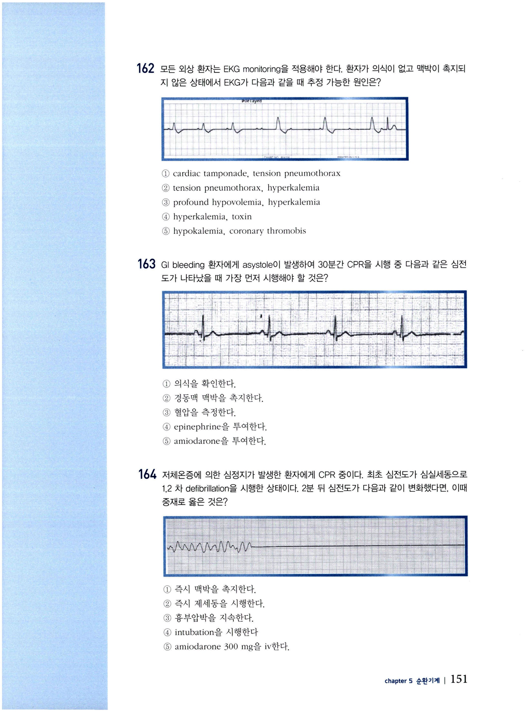
문 163 CPR 중 심전도 변화
GI bleeding 환자에게 asystole이 발생하여 30분간 CPR을 시행 중 다음과 같은 심전도가 나타났을 때 가장 먼저 시행해야 할 것은?
- 의식을 확인한다
- 경동맥 맥박을 촉지한다
- 혈압을 측정한다
- epinephrine을 투여한다
- amiodarone을 투여한다
문 164 저체온 심정지 CPR
저체온증에 의한 심정지가 발생한 환자에게 CPR 중이다. 최초 심전도가 심실세동으로 1, 2차 defibrillation을 시행한 상태이다. 2분 뒤 심전도가 다음과 같이 변화했다면 이때 중재로 옳은 것은?
- 즉시 맥박을 촉지한다
- 즉시 제세동을 시행한다
- 흉부압박을 지속한다
- intubation을 시행한다
- amiodarone 300 mg을 iv한다
문 165 불안정 빈맥 중재
심전도 모니터링 중에 다음과 같이 빈맥을 보이는 환자가 갑자기 의식이 혼미해지고 호흡곤란을 호소한다. 환자에게 가장 우선적으로 시행해야 할 것은?
- defibrillation
- cardioversion
- valsalva 수기
- carotid massage
- pacemaker
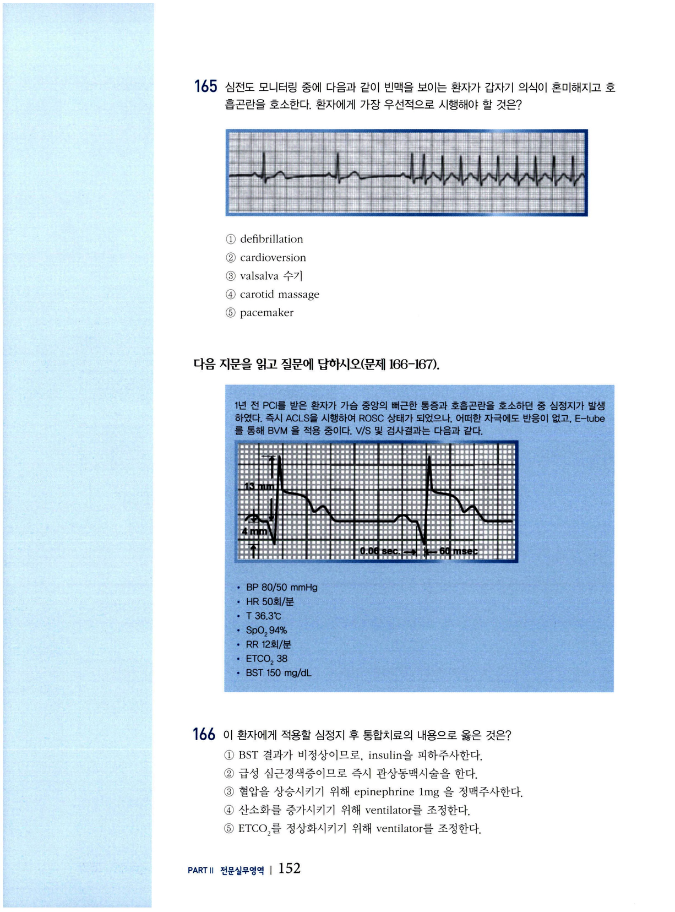
문 166–167 심정지 후 통합치료(공유 지문)
1년 전 PCI를 받은 환자가 가슴 중앙의 뻐근한 통증과 호흡곤란을 호소하던 중 심정지가 발생하였다. 즉시 ACLS를 시행하여 ROSC 상태가 되었으나, 어떠한 자극에도 반응이 없고 E-tube를 통해 BVM을 적용 중이다. V/S 및 검사결과는 다음과 같다.
BP 80/50 mmHg, HR 50회/분, T 36.3℃, SpO₂ 94%, RR 12회/분, ETCO₂ 38, BST 150 mg/dL
이 환자에게 적용할 심정지 후 통합치료의 내용으로 옳은 것은?
- BST 결과가 비정상이므로 insulin을 피하주사한다
- 급성 심근경색증이므로 즉시 관상동맥시술을 한다
- 혈압을 상승시키기 위해 epinephrine 1mg을 정맥주사한다
- 산소화를 증가시키기 위해 ventilator를 조정한다
- ETCO₂를 정상화시키기 위해 ventilator를 조정한다
이 환자에게 저체온요법을 적용하기로 결정되었다면 이에 대한 설명으로 옳지 않은 것은?
- ROSC 후 혼수상태를 보이는 환자에게 뇌를 포함한 다른 장기의 기능을 보호하기 위해 적용한다
- 혼수상태가 호전될 때까지 적용한다
- 중심 체온 32~34℃를 유지한다
- 얼음주머니를 적용하고 차가운 생리식염수를 빠르게 정맥주사한다
- 재가온 시 고체온증이 있다면 37.6℃ 이하로 조절한다
문 168–169 기계판막 대치술 후 저혈량(공유 지문)
승모판 부전으로 어제 입원한 남자환자가 기계판막 대치술을 받고 SICU로 돌아왔다. 신체사정 내용은 다음과 같다.
체온 36.2℃, 맥박 80회/분(일시적 심박조율기 사용), 혈압 86/60 mmHg, 호흡 12회(인공호흡기 ACMV mode), PAS 15 mmHg, PAD 8 mmHg, PAOP 4 mmHg, RA 3 mmHg, CO 4.9 L/min, CI 1.9 L/min/m², SVR 2200 dynes/s/cm⁵
CO의 저하와 저혈압을 일으킨 원인으로 추정되는 것은?
- 혈량과다
- 심근수축력 손상
- 혈량과소
- 후부하 증가
- 심박조율기 부전
이 환자에게 즉시 필요한 중재는?
- 심실 수축력 증가를 위해 Dobutamine 투여
- 후부하를 감소시키기 위해 Sodium nitroprusside 투여
- 심장박동수를 90회/분으로 올림
- 전부하를 증가시키기 위해 수액 주입
- 후부하 증가시키기 위해 Vasopressin 투여
문 170 승모판 기능부전 우선중재
48세 여자가 호흡곤란과 심한 피로감으로 CCU에 입원하였다. 15년 전 세균성 심내막염을 앓았고 이후 승모판 기능부전이 있다. 입원 당일 심장박동수는 APC를 동반한 동성리듬을 보였고 혈압은 150/94 mmHg였다. 흉부 청진 시 왼쪽 폐저부에서 수포음이 들렸다. 혈역학적 사정결과는 다음과 같을 때 이 환자에게 필요한 우선적인 중재는?
RAP 12 mmHg, PAP 35/25 mmHg, PAOP 24 mmHg, CO 4.8 L/min, CI 1.9 L/min/m², SVR 2100 dynes/s/cm⁵
- 조직에 산소공급을 증가시킨다
- 강심제 사용 시작을 고려한다
- 혈압을 낮추기 위해 Sodium nitroprusside을 투여한다
- 전부하를 감소시키기 위해 이뇨제를 투여한다
- 심장박동수를 낮추기 위해 베타차단제를 투여한다
문 171 CABG 후 심장압전
관상동맥우회술 후 2시간 경과된 환자의 사정내용은 다음과 같을 때 이 결과들이 시사하는 내용은?
HR 80회/분(100% 심박조율), BP 80/62 mmHg, MAP 68 mmHg, RAP 15 mmHg, PAD 14 mmHg, CO 3.0 L/min, 흉관배액관을 통해 2시간 동안 50 mL의 배액량을 보임
- 심장수술 후 정상코스
- 심근 기면(stunning)
- 심장 압전
- 수술 후 심근경색증
- 수술 후 폐울혈
문 172 IABP 치료 적절성 지표
심장성 쇼크로 ICU에 입원한 환자가 IABP (intra-aortic balloon pump)와 혈관수축제를 사용하고 있다. 다음 중 현재 치료가 적절함을 알려주는 가장 좋은 사정결과는?
- HR 100회/분, MAP 66 mmHg, SVR 1200 dynes/s/cm⁵
- HR 117회/분, MAP 53 mmHg, SVR 1900 dynes/s/cm⁵
- HR 110회/분, MAP 70 mmHg, SVR 2800 dynes/s/cm⁵
- HR 105회/분, MAP 53 mmHg, SVR 2400 dynes/s/cm⁵
- HR 90회/분, MAP 55 mmHg, SVR 2000 dynes/s/cm⁵
문 173 대동맥판막치환술 후 중재
대동맥 역류로 대동맥판막치환술을 받은 후 다음과 같은 혈역학적 지표가 나타난 환자에게 적절한 중재는?
HR 70회/분(100% 심박조율), BP 90/40 mmHg, MAP 56 mmHg, PCWP 18 mmHg, 소변량 100 mL/hr
- 생리식염수 250 mL 주입
- 도부타민 주입
- norepinephrine 주입
- 심박조율 80회/분으로 올림
- furosemide 40 mg IV
문 174 저혈량성 쇼크 수액치료 지표
저혈량성 쇼크에서 수액치료가 적절하게 잘되었음을 나타내는 지표는?
- SVO₂ 45%, CO 3.0 L/min, SVR 800 dynes/s/cm⁵
- SVO₂ 45%, CO 5.0 L/min, SVR 1900 dynes/s/cm⁵
- SVO₂ 68%, CO 5.0 L/min, SVR 2100 dynes/s/cm⁵
- SVO₂ 68%, CO 4.4 L/min, SVR 1100 dynes/s/cm⁵
- SVO₂ 50%, CO 3.5 L/min, SVR 1600 dynes/s/cm⁵
문 175 삼첨판역류·혈역학 왜곡
삼첨판역류 환자에게 폐동맥 카테터를 삽입하였다. 이 환자의 상태로 인해 왜곡될 수 있는 혈역학적 지표값은?
- 중심정맥압
- 폐동맥 수축기압
- 폐동맥 이완기압
- 폐동맥 쐐기압
- 동맥압
문 176 주산기 심근병증·용적과부하
임신 31주된 32세 임신부가 호흡곤란과 피로로 입원하였다. 양쪽 폐저부에 수포음이 들리고 말초 산소포화도는 88%이다. 심초음파 상 좌심실이 확장되고 기능감소가 보이면서 심박출률이 20~25%를 보인다. 폐동맥 카테터를 통한 정보는 다음과 같을 때 용적 과부하를 시사하는 혈역학적 정보는?
RAP 12 mmHg, PAP 48/26 mmHg, PAOP 24 mmHg, CO 3.7 L/min, CI 1.8 L/min/m²
- PAP 48/26 mmHg
- RAP 12 mmHg, PAOP 24 mmHg
- EF 20~25%
- 말초 산소포화도 88%
- CI 1.8 L/min/m²
문 177–178 심인성 폐부종(공유 지문)
58세 남자가 심근경색증이 의심되어 입원하였다. 혈압 82/52 mmHg, 맥박 122회/분이었고 기좌호흡과 극심한 불안을 보이면서 호흡음은 수포음이 들렸는데 특히 뒤쪽에서 저명하게 들렸다. 한 시간 뒤 폐동맥 카테터를 삽입할 예정이다.
이 환자의 증상을 볼 때, 폐동맥 카테터를 통해 나타날 것으로 예상되는 것은?
- PAOP <10 mmHg, SI >25 mL/m², CI <2 L/m²
- PAOP >22 mmHg, SI <25 mL/m², CI <2 L/m²
- CVP >15 mmHg, CI >4/m²
- SVR >2000 dynes/s/cm⁵, CI >4/m²
- SVR >2000 dynes/s/cm⁵, CVP >15 mmHg
이 환자에게 가장 효과적인 약물치료는?
- Dopamine, nitroprusside
- Furosemide, milrinone
- Dobutamine, epinephrine
- Morphine, furosemide
- Nitroglycerin, norepinephrine
문 179 전해질·심실부정맥
다음 중 심실성 부정맥을 야기할 위험이 가장 큰 전해질 불균형은?
- 혈청 포타슘 3.2 mEq/L
- 혈청 소듐 125 mEq/L
- 혈청 마그네슘 2.0 mg/dL
- 혈청 칼슘 8.0 mg/dL
- 혈청 클로라이드 105 mEq/L
문 180 심장이식 거부반응 확진
심장이식 후 거부반응이 예상될 때 확진을 위해 필요한 검사는?
- 심전도
- 심근생검
- 심장초음파
- 혈액배양검사
- 관상동맥조영술
문 181 심장이식 후 감염(CMV)
심장이식 후 한달째인 환자가 전신무력감을 호소하며 발열, 저혈압, 심부전 증상이 보인다. 가장 먼저 고려해야 할 약물중재는?
- aspirin 경구투여
- bactrim 경구투여
- gancyclovir 정맥투여
- amphotericin B 정맥투여
- methylprednisolone 정맥투여
문 182 VVI 박동조율기 판독
VVI 모드로 인공 심박조율기를 하고 있는 환자의 심전도가 다음과 같을 때 의미하는 것은?
- 1:1로 적절하게 반응하고 있다
- 감지부전을 보인다
- 포착부전을 보인다
- 과소감지를 보인다
- 과다감지를 보인다
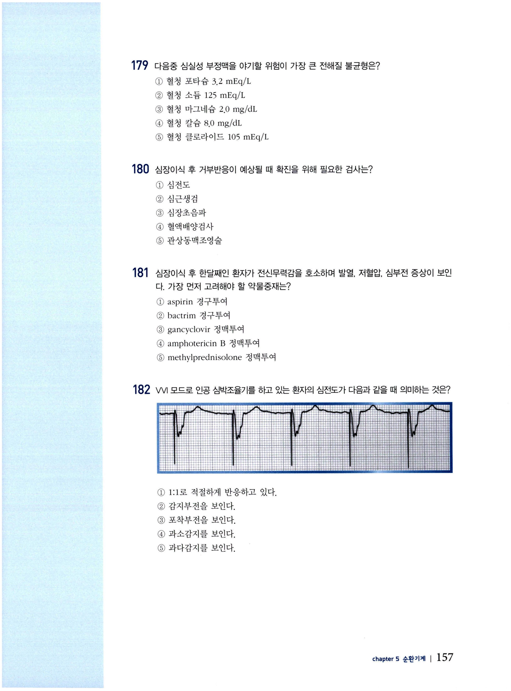
문 183 CABG 후 시간별 사정
심근경색증 환자가 PCI와 혈전용해술 실패로 관상동맥우회술을 받았다. 환자는 의식이 명료하고 의사소통이 가능하였다. 수술 후 흉막과 종격동에 튜브가 삽입되어 있고 중정도의 배액량을 보인다. 수술부위와 오른쪽 PCI 시술부위에도 중정도의 삼출물이 보인다. 환자는 폐동맥카테터, 비위관과 유치도뇨관을 가지고 있다. 이 환자에게 추가로 간호사가 시간마다 확인해야 하는 것은?
- 뇌출혈을 확인하기 위해 동공반사를 본다
- 후복막 출혈 확인을 위해 등을 시진한다
- 오른쪽 다리의 SMC 확인과 서혜부를 촉진한다
- 위장출혈을 사정하기 위해 장음을 청진한다
- 부정맥을 확인하기 위해 12유도 심전도를 찍는다
문 184 ICD 부적절 충격
ICD (implanted cardioverter defibrillator)가 삽입된 환자에게 심방세동이 발생하였고, 부적절하게 제세동 충격이 가해졌다. 간호사가 첫 번째로 수행해야 하는 것은?
- 경피적 심박조율기를 달아준다
- 심박조율기 generator에서 자석을 멀리 둔다
- diltiazem 15mg을 2분에 걸쳐 IV 한다
- amiodarone 150mg을 10분에 걸쳐 IV 한다
- 200J로 제세동을 시행한다
문 185 일시적 심박조율기·기흉
경정맥 일시적 심박조율기를 삽입한 환자의 혈압이 130/70 mmHg에서 96/78 mmHg로 떨어졌다. 호흡수는 30회/분으로 상승하였고 호흡음은 양쪽에서 깨끗하게 들렸다. 경정맥 확장이 보였고 심장박동수는 심박조율기로 100% 조율되면서 70회/분이다. 이때 의심할 수 있는 원인은?
- 혈흉
- 기흉
- 심낭 압전
- 심박조율기 부전
- 심박조율기 증후군
문 186 IABP 목적
심장성 쇼크에서 IABP (intra-aortic balloon pump)는 무엇을 증가시키기 위함인가?
- 수축기 동안 관상동맥 혈류
- 심근의 산소공급
- 좌심실 혈류량
- 좌심실 수축기압
- 우심실 이완기압
문 187 VAD 교육
심부전 환자가 심실보조장치(VAD)에 대해 질문할 때 적절한 간호사의 교육내용은?
- VAD는 삶의 질을 향상시켜주진 못하지만 증상을 개선해 준다
- VAD는 심박조율기처럼 흉부 상부에 삽입된다
- 대부분의 VAD는 이식 전까지 일시적으로 사용된다
- VAD를 삽입하고 나면 입원해서 침상안정을 해야 한다
- VAD를 삽입한 후에는 약물치료가 필요 없다
문 188 불안정 심방세동·동율동전환
1주일 전부터 발생한 심방세동으로 헤파린 정맥주사 중인 환자가 갑작스런 심계항진과 호흡곤란을 호소하고 있다. 심전도는 아래와 같고 혈압은 70/30mmHg로 감소한 상태이다. 흉부 방사선검사를 시행한 결과 양쪽 폐음영이 증가했고 폐음 청진 시 양쪽 폐전체에서 수포음이 청진된다. 이 환자에게 가장 우선적으로 시행해야 할 치료는?
- 동율동전환
- 경정맥 마사지
- 아데노신 정맥주사
- 베타차단제 정맥주사
- 칼슘통로차단제 정맥주사
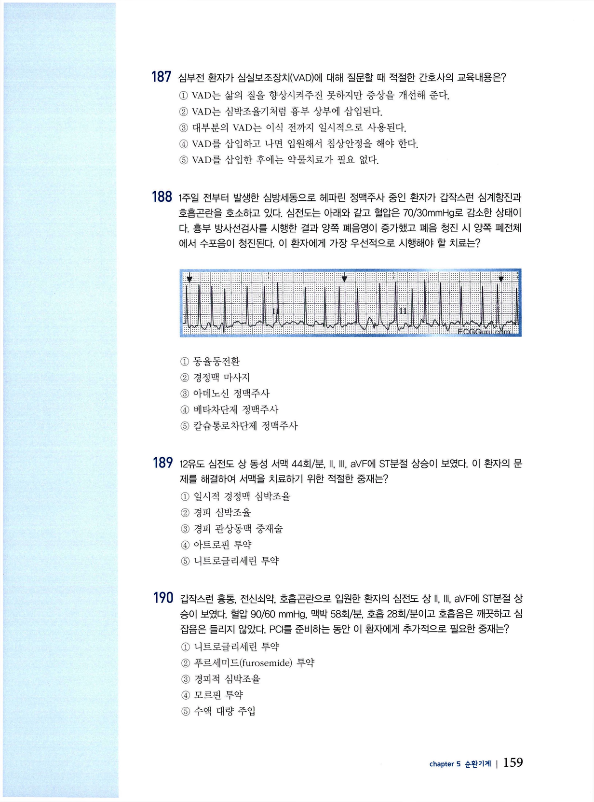
문 189 하벽 MI 동반 서맥
12유도 심전도 상 동성 서맥 44회/분, II, III, aVF에 ST분절 상승이 보였다. 이 환자의 문제를 해결하여 서맥을 치료하기 위한 적절한 중재는?
- 일시적 경정맥 심박조율
- 경피 심박조율
- 경피 관상동맥 중재술
- 아트로핀 투약
- 니트로글리세린 투약
문 190 하벽 STEMI·우심실경색 중재
갑작스런 흉통, 전신쇠약, 호흡곤란으로 입원한 환자의 심전도 상 II, III, aVF에 ST분절 상승이 보였다. 혈압 90/60 mmHg, 맥박 58회/분, 호흡 28회/분이고 호흡음은 깨끗하고 심잡음은 들리지 않았다. PCI를 준비하는 동안 이 환자에게 추가적으로 필요한 중재는?
- 니트로글리세린 투약
- 푸로세미드(furosemide) 투약
- 경피적 심박조율
- 모르핀 투약
- 수액 대량 주입
문 191 IABP 파형 이상
환자에게 적용 중인 IABP 파형이 그림과 같을 때 환자에게 나타날 수 있는 영향은? (Balloon inflation 시점 표시)
- 좌심실 부하 증가
- 이완기 관류 감소
- 관상동맥관류 증가
- 일회심박출량 증가
- 좌심실산소요구량 증가
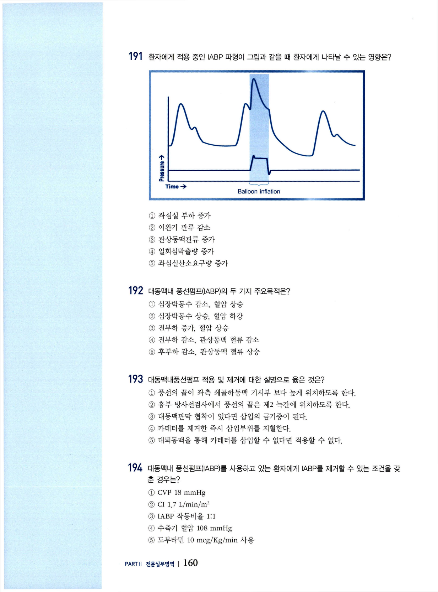
문 192 IABP 두 가지 주요목적
대동맥내 풍선펌프(IABP)의 두 가지 주요목적은?
- 심장박동수 감소, 혈압 상승
- 심장박동수 상승, 혈압 하강
- 전부하 증가, 혈압 상승
- 전부하 감소, 관상동맥 혈류 감소
- 후부하 감소, 관상동맥 혈류 상승
문 193 IABP 적용·제거
대동맥내풍선펌프 적용 및 제거에 대한 설명으로 옳은 것은?
- 풍선의 끝이 좌측 쇄골하동맥 기시부보다 높게 위치하도록 한다
- 흉부 방사선검사에서 풍선의 끝은 제2 늑간에 위치하도록 한다
- 대동맥판막 협착이 있다면 삽입의 금기증이 된다
- 카테터를 제거한 즉시 삽입부위를 지혈한다
- 대퇴동맥을 통해 카테터를 삽입할 수 없다면 적용할 수 없다
문 194 IABP 제거 조건
대동맥내 풍선펌프(IABP)를 사용하고 있는 환자에게 IABP를 제거할 수 있는 조건을 갖춘 경우는?
- CVP 18 mmHg
- CI 1.7 L/min/m²
- IABP 작동비율 1:1
- 수축기 혈압 108 mmHg
- 도부타민 10 mcg/Kg/min 사용
문 195 pacemaker 모드 판독
다음 그림에 해당하는 pacemaker 모드는?
- VOO
- VVI
- AOO
- AAI
- DDD
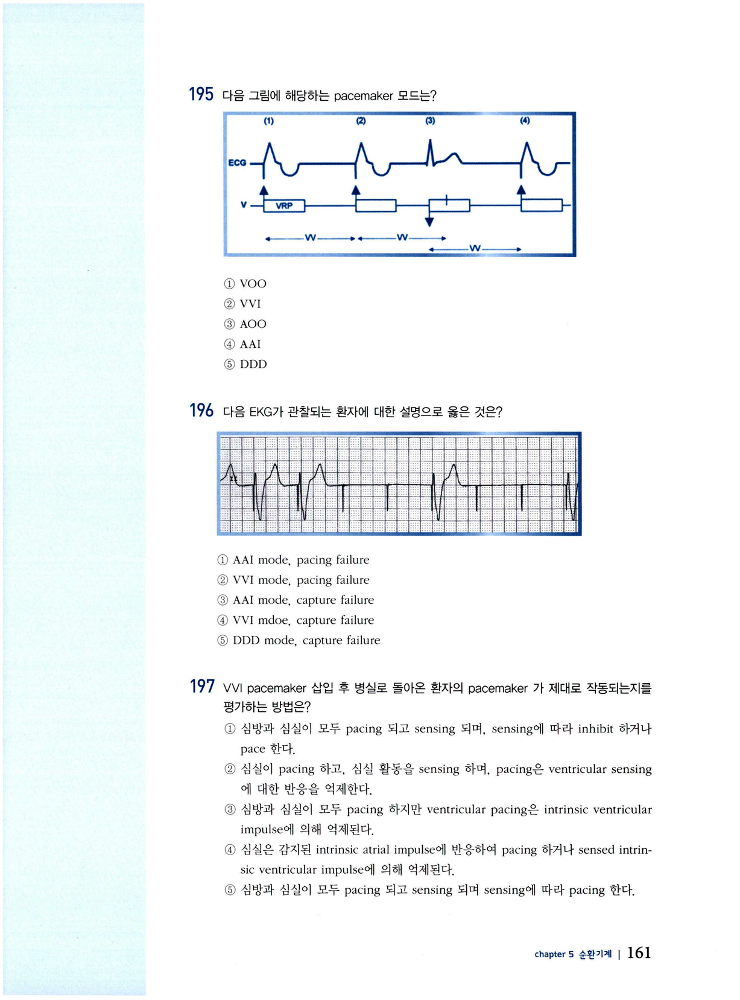
문 196 EKG·pacing/capture failure
다음 EKG가 관찰되는 환자에 대한 설명으로 옳은 것은?
- AAI mode pacing failure
- VVI mode pacing failure
- AAI mode capture failure
- VVI mode capture failure
- DDD mode capture failure
문 197 VVI pacemaker 작동평가
VVI pacemaker 삽입 후 병실로 돌아온 환자의 pacemaker가 제대로 작동되는지를 평가하는 방법은?
- 심방과 심실이 모두 pacing 되고 sensing 되며, sensing에 따라 inhibit 하거나 pace 한다
- 심실이 pacing 하고, 심실 활동을 sensing 하여, pacing은 ventricular sensing에 대한 반응을 억제한다
- 심방과 심실이 모두 pacing 하지만 ventricular pacing은 intrinsic ventricular impulse에 의해 억제된다
- 심실은 감지된 intrinsic atrial impulse에 반응하여 pacing 하거나 sensed intrinsic ventricular impulse에 의해 억제된다
- 심방과 심실이 모두 pacing 되고 sensing 되며 sensing에 따라 pacing 한다
문 198 심실보조장치
심실보조장치에 대한 설명으로 옳은 것은?
- 심장이식 대상여부를 판단하기 어려운 경우 적용하지 않는다
- 감염, 출혈, 뇌졸중, 기계장치관련 합병증이 발생할 수 있다
- 박동형 심실보조장치가 비박동형보다 내구성이 우수하다
- 심실에 연결된 관으로 혈액이 박출되고 대동맥에 연결된 관으로 혈액이 유입된다
- 우심실보조장치는 우심실에서 혈류를 배출시켜 심실보조장치를 지나 폐동맥으로 박출시킨다
문 199 ECMO 모드
체외막형산화기(ECMO) 모드에 대한 설명으로 옳은 것은?
- VA ECMO는 단독 호흡부전에서 이산화탄소 제거를 위해 적용한다
- VA ECMO는 순환보조를 위해 동맥혈을 배액하여 정맥관을 통해 관류시킨다
- VV ECMO의 경우 정맥도관의 거리를 가까이 하여 재순환을 방지한다
- VV ECMO는 배액량을 증가시키기 위해 VA ECMO로 전환시키기도 한다
- AV ECMO는 펌프없이 이산화탄소제거를 위해 동맥관에서 배액하여 정맥관으로 관류시킨다
문 200 ECMO 환자관리
체외막형산화기(ECMO)를 적용 중인 환자관리에 대한 설명으로 옳은 것은?
- ECMO weaning 시 flow가 3 L/min 이하의 경우 ACT를 감소시킨다
- 인공호흡기는 최대한으로 해서 폐의 회복을 도모한다
- VA ECMO는 적용 시 높은 전신혈관저항(SVR)인 환자에게 nitroprusside를 투여하여 조절한다
- VA ECMO 적용 중 사지 pulse는 모두 촉진 가능하다
- VA ECMO의 경우 arterial wave에서 dicrotic notch를 관찰한다